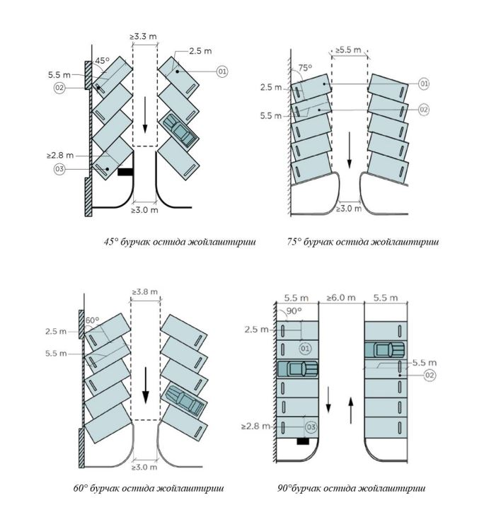
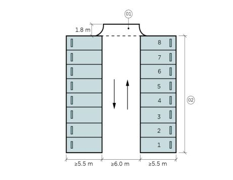

01/2-6-сон 24.01.2025. SHNQ 2.05.07-24 “Avtoturargohlar” shaharsozlik normalari va qoidalarini tasdiqlash toʻgʻrisida
[OKOZ:
1.09.00.00.00 Tadbirkorlik va xoʻjalik faoliyati / 09.13.00.00 Shaharsozlik va arxitektura / 09.13.01.00 Umumiy qoidalar]
[TSZ:
1.Iqtisodiyot / Arxitektura va qurilish]
Oʻzbekiston Respublikasi qurilish va uy-joy kommunal xoʻjaligi vazirining
buyrugʻi
SHNQ 2.05.07-24 “Avtoturargohlar” shaharsozlik normalari va qoidalarini tasdiqlash toʻgʻrisida
[Oʻzbekiston Respublikasi Adliya vazirligi tomonidan 2025-yil 24-fevralda hisobga olindi, hisob raqami 335]
Oʻzbekiston Respublikasining Shaharsozlik kodeksi hamda Vazirlar Mahkamasining 2022-yil 6-oktabrdagi 577-son “Qurilish sohasiga oid talablarni soddalashtirish hamda texnik jihatdan tartibga solish sohasidagi normativ hujjatlarni tizimlashtirish chora-tadbirlari toʻgʻrisida”gi qaroriga muvofiq buyuraman:
1. SHNQ 2.05.07-24 “Avtoturargohlar” shaharsozlik normalari va qoidalari ilovaga muvofiq tasdiqlansin.
2. Mazkur buyruq Oʻzbekiston Respublikasi Favqulodda vaziyatlar vazirligi, Transport vazirligi, Ekologiya, atrof-muhitni muhofaza qilish va iqlim oʻzgarishi vazirligi, Energetika vazirligi, Oʻzbekiston Respublikasi Prezidenti huzuridagi Ijtimoiy himoya milliy agentligi hamda Sogʻliqni saqlash vazirligi huzuridagi Sanitariya-epidemiologik osoyishtalik va jamoat salomatligi qoʻmitasi bilan kelishilgan.
3. Ushbu buyruq rasmiy eʼlon qilingan kundan eʼtiboran kuchga kiradi.
Vazir Sh. XIDOYATOV
Toshkent sh.,
2025-yil 24-yanvar,
01/2-6-son
Kelishildi:
Ekologiya, atrof-muhitni muhofaza qilish va iqlim oʻzgarishi vaziri A. ABDUXAKIMOV
2025-yil 16-yanvar
Favqulodda vaziyatlar vaziri A. KULDASHEV
2025-yil 13-yanvar
Energetika vaziri J. MIRZAMAHMUDOV
2025-yil 8-yanvar
Ijtimoiy himoya milliy agentligi direktori M. OLLOYOROV
2024-yil 18-dekabr
Transport vaziri I. MAXKAMOV
2024-yil 13-dekabr
Sanitariya-epidemiologik osoyishtalik va jamoat salomatligi qoʻmitasi raisi B. YUSUPALIYEV
2024-yil 6-dekabr
Oʻzbekiston Respublikasi qurilish va uy-joy kommunal xoʻjaligi vazirining 2025-yil 24-yanvardagi 01/2-6-son buyrugʻiga ILOVA
SHNQ 2.05.07-24 “Avtoturargohlar” shaharsozlik normalari va qoidalari
Oldingi tahrirga qarang.
Mazkur shaharsozlik normalari va qoidalari (bundan buyon matnda SHNQ deb yuritiladi) aholi punktlarida, togʻ va togʻoldi hududlarda, suv obyektlari atrofida, turistik obyektlar hududlarida joylashgan avtomobillar, shu jumladan elektromobillar va gibrid avtomobillar, mikroavtobuslar, mototransport hamda velotransport vositalari uchun moʻljallangan avtoturargohlarni (bundan buyon matnda avtoturargohlar deb yuritiladi) loyihalashga oid talablarni belgilaydi.
(muqaddimaning birinchi xatboshisi Oʻzbekiston Respublikasi qurilish va uy-joy kommunal xoʻjaligi vazirining 2026-yil 6-avgustdagi 01/2-32-sonli buyrugʻi (hisob raqami 413, 11.08.2026-y.) tahririda)
Ushbu SHNQning talablari quyidagilarga nisbatan tatbiq etilmaydi:
avtomobillarni joriy taʼmirlash va ularga texnik xizmat koʻrsatishga moʻljallangan garajlarga (avtomobillarni yuvish joylari bundan mustasno);
ruxsat etilgan maksimal ogʻirligi 3,5 t dan ortiq boʻlgan avtomobillar avtoturargohlariga;
portlovchi, zaharli va radiatsiyasi faol moddalarni tashiydigan avtomobillar, yongʻin-qutqaruv, tibbiy tez yordam, avariya holatlarida (favqulodda vaziyatlarda) xizmat koʻrsatuvchi avtomobillar avtoturargohlari va garajlariga.
1-bob. Shaharsozlik normalari va qoidalari, sanitariya qoidalari, normalari va gigiyena normativlari hamda texnik jihatdan tartibga solish sohasidagi normativ hujjatlarga havolalar
1. Mazkur SHNQda quyidagi shaharsozlik normalari va qoidalari, sanitariya qoidalari, normalari va gigiyena normativlari hamda texnik jihatdan tartibga solish sohasidagi normativ hujjatlarga havolalar keltirilgan:
SHNQ 2.01.02-04 “Bino va inshootlarning yongʻin xavfsizligi”;
SHNQ 2.01.07-21 “Yuklamalar va taʼsirlar”;
QMQ 2.01.03-19 “Seysmik hududlarda qurilish”;
SHNQ 2.01.19-22 “Portlab-yonish va yongʻin xavfi boʻlgan xonalar, binolar va tashqi qurilmalar toifalarini aniqlash”;
SHNQ 2.03.01-24 “Beton va temir-beton konstruksiyalar”;
SHNQ 2.07.01-23 “Aholi punktlarining hududlarini rivojlantirish va qurishni shaharsozlik jihatidan rejalashtirish”;
SHNQ 2.07.02-24 “Qurilish obyektlarini nogironligi boʻlgan va hayot faoliyati cheklangan shaxslar hamda keksalar ehtiyojini inobatga olgan holda loyihalashtirish”;
SHNQ 2.08.01-24 “Turar joy obyektlarini loyihalash”;
SHNQ 2.08.02-23 “Jamoat binolari va inshootlari”;
SHNQ 2.01.05-24 “Tabiiy va sunʼiy yoritish”;
Oldingi tahrirga qarang.
SHNQ 2.01.08-24 “Shovqindan himoya”;
(1-bandning oʻn toʻrtinchi xatboshisi Oʻzbekiston Respublikasi qurilish va uy-joy kommunal xoʻjaligi vazirining 2026-yil 6-avgustdagi 01/2-32-sonli buyrugʻi (hisob raqami 413, 11.08.2026-y.) tahririda)
SHNQ 2.03.13-24 “Pollar”;
SHNQ 2.04.01-22 “Binolarning ichki suv taʼminoti va oqova suvlarni chiqarib yuborish”;
SHNQ 2.04.02-19 “Suv taʼminoti. Tashqi tarmoqlar va inshootlar”;
SHNQ 2.04.05-22 “Isitish, ventilyatsiya va konditsiyalash”;
SHNQ 2.04.22-25 “Yer usti oqova suvlarini tozalash inshootlarini loyihalash”;
(1-band Oʻzbekiston Respublikasi qurilish va uy-joy kommunal xoʻjaligi vazirining 2026-yil 6-avgustdagi 01/2-32-sonli buyrugʻi (hisob raqami 413, 11.08.2026-y.) asosan yigirma toʻrtinchi xatboshi bilan toʻldirilgan)
GOST 12.1.005-2015 “Mehnat xavfsizligi standartlari tizimi. Ish zonasining havosiga qoʻyiladigan umumiy sanitar-gigiyenik talablar” (rasmiy manba:“Sistema standartov bezopasnosti truda. Obshiye sanitarno-gigiyenicheskiye trebovaniya k vozduxu rabochey zoni”);
GOST 14254-2015 - (IEC 60529:2013) “(Kod IP) qobiqlari bilan taʼminlanadigan himoya darajalari” (rasmiy manba: “Stepeni zashiti, obespechivayemie obolochkami (Kod IP)”;
Oldingi tahrirga qarang.
GOST 25772-2025 “Zinapoyalar, balkonlar, tomlar, zinapoya marshlari va maydonchalarning metall toʻsiqlari. Umumiy texnik shartlar” (rasmiy manba: Ograjdeniya metallicheskiye lestnits, balkonov, krish, lestnichnix marshey i ploshadok. Obshiye texnicheskiye usloviya);
(1-bandning yigirma yettinchi xatboshisi Oʻzbekiston Respublikasi qurilish va uy-joy kommunal xoʻjaligi vazirining 2026-yil 6-avgustdagi 01/2-32-sonli buyrugʻi (hisob raqami 413, 11.08.2026-y.) tahririda)
GOST 27751-2014 “Qurilish konstruksiyalari va asoslarning ishonchliligi. Asosiy qoidalar” (rasmiy manba: Nadejnost stroitelnix konstruksiy i osnovaniy. Osnovnie polojeniya);
GOST 33652-2019 “Liftlar. Aholining nogironligi boʻlgan shaxslari hamda boshqa harakatlanishi cheklangan guruhlari uchun havfsizlik va qulaylik talablari” (rasmiy manba: Lifti. Spetsialnie trebovaniya bezopasnosti i dostupnosti dlya invalidov i drugix malomobilnix grupp naseleniya);
Oldingi tahrirga qarang.
GOST 33984.1-2023 “Liftlar. Oʻrnatishga qoʻyiladigan umumiy xavfsizlik talablari” (rasmiy manba: Lifti. Obshiye trebovaniya bezopasnosti k ustroystvu i ustanovke. Lifti dlya transportirovaniya lyudey ili lyudey i gruzov);
(1-bandning oʻttiz ikkinchi xatboshisi Oʻzbekiston Respublikasi qurilish va uy-joy kommunal xoʻjaligi vazirining 2026-yil 6-avgustdagi 01/2-32-sonli buyrugʻi (hisob raqami 413, 11.08.2026-y.) tahririda)
GOST 3826-82 “Kvadrat teshikli sim toʻrlar. Texnik talablar” (rasmiy manba: GOST 3826-82 Setki provolochnie tkanie s kvadratnimi yacheykami. Texnicheskiye usloviya);
GOST R 53254–2009 “Yongʻin texnikasi. Tashqi oʻrnatilgan yongʻin zinalari. Tom toʻsiqlari. Umumiy texnik shartlar. Sinash usullari” (rasmiy manba: Texnika pojarnaya. Lestnitsi pojarnie narujnie statsionarnie. Ograjdeniya krovli. Obshiye texnicheskiye trebovaniya. Metodi ispitaniy);
GOST R 53296-2009 “Bino va inshootlarda yongʻin oʻchiruvchilar uchun liftlarni oʻrnatish. Yongʻin xavfsizligi talablari” (rasmiy manba: Ustanovka liftov dlya pojarnix v zdaniyax i soorujeniyax. Trebovaniya pojarnoy bezopasnosti);
GOST 5746-2015(ISO 4190-1:2010)“Yoʻlovchi tashuvchi liftlar. Asosiy parametrlari va oʻlchamlari” (rasmiy manba: Lifti passajirskiye. Osnovnie parametri i razmeri);
GOST IEC 60332-2-2-2011 “Elektr va optik kabellarni olov taʼsiri holatida sinash” (rasmiy manba: Ispitaniya elektricheskix i opticheskix kabeley v usloviyax vozdeystviya plameni);
GOST IEC 61851-1-2017 “Elektromobillarni quvvatlantirishning tok oʻtkazuvchi tizimi. 1-qism. Umumiy talablar” (rasmiy manba: Sistema zaryadki elektricheskix transportnix sredstv provodnaya Chast 1 Obshiye trebovaniya);
GOST IEC 62196-2-2018“Transport vositalarining vilkalari, shtepselli rozetkalari, koʻchma rozetkalari va kiritish detallari. Elektromobillar uchun konduktiv quvvatlantirgich. 2-qism. Elektr transport vositalarini simli quvvatlantirish. Oʻzgaruvchan tok yordamchi uskunasining shtirlari va kontakt uyalari bilan oʻlchamlarining mosligi va oʻzaro almashinuvchanligiga qoʻyiladigan talablar” (rasmiy manba: Vilki, shtepselnie rozetki, perenosnie rozetki i vvodi transportnix sredstv. Provodnaya zaryadka elektricheskix transportnix sredstv. Chast 2. Trebovaniya k sovmestimosti i vzaimozamenyayemosti razmerov vspomogatelnogo oborudovaniya peremennogo toka so shtiryami i kontaktnimi gnezdami);
GOST 8823-2018 “Yuk tashuvchi liftlar. Asosiy parametrlar va oʻlchamlar” (rasmiy manba: Lifti gruzovie. Osnovnie parametri i razmeri);
Oʻz DSt IEC 60364-4-41-2020 (IEC 60364-4-41-2005, IDT) “Past kuchlanishli elektr qurilmalari. 4-41-qism. Xavfsizlik uchun himoya qilish. Elektr toki urishidan himoya qilish”;
Oldingi tahrirga qarang.
SanQvaN 0103-25 “Sanitariya-muhofaza zonasiga doir sanitariya qoidalari, normalari va gigiyena normativlari”.
(1-bandning qirq uchinchi xatboshisi Oʻzbekiston Respublikasi qurilish va uy-joy kommunal xoʻjaligi vazirining 2026-yil 6-avgustdagi 01/2-32-sonli buyrugʻi (hisob raqami 413, 11.08.2026-y.) tahririda)
2-bob. Atamalar, taʼriflar va qisqartmalar
2. Ushbu SHNQda quyidagi atamalar va ularning taʼriflari qoʻllanilgan:
avtomatik yongʻin oʻchirish qurilmasi – yongʻin signalizatsiyasi tizimi yoki qurilmaning oʻzida oʻrnatilgan yongʻinni inson aralashuvisiz aniqlovchi texnik vositalar orqali qabul qilingan boshqaruv signalidan soʻng oʻt oʻchirish moddasining uzatilishini (chiqarilishini) hamda yongʻin toʻgʻrisidagi signalni tashqi zanjirlarga uzatib berilishini taʼminlovchi yongʻin oʻchirish qurilmasi;
koʻp qavatli avtoturargoh – transport vositalarini doimiy, vaqtincha yoki mavsumiy saqlash (turishi) uchun moʻljallangan alohida yoki qoʻshib qurilgan, yer usti, yer osti yoki birlashgan hamda balandligi 9 qavatgacha boʻlgan bino, inshoot (bino yoki inshoot qismi);
boks turidagi avtomobillarni saqlash joyi – bevosita tashqariga chiqadigan yoki ichki yoʻlakka oʻtadigan avtomobilni alohida bokslarda saqlash joyi;
manej turidagi avtomobillarni saqlash joyi – avtomobillar saqlanadigan umumiy zal;
bir yoʻlli rampa – avtomobillarni koʻchirish uchun bitta yoʻl (polosa)ga ega boʻlgan qiya konstruksiya;
yongʻin avtomatikasi tizimi – obyektning yongʻin xavfsizligini taʼminlash uchun moʻljallangan oʻzaro aloqa qiluvchi yongʻin signalizatsiyasi, yongʻin toʻgʻrisida xabar berish, odamlarni ogohlantirish va evakuatsiya qilish, tutunga qarshi shamollatish tizimlari hamda AYOOʻQ va boshqa avtomatik yongʻinga qarshi himoya texnik uskunalari majmui;
izolyatsiyalangan rampa – koʻcha tomondan va avtoturargoh xonalaridan, jumladan avtomobillarni saqlash xonasidan toʻsiqlar bilan ajratilgan rampa;
mexanizatsiyalashgan avtoturargoh – avtomobillarni saqlash joyiga maxsus mexanizatsiyalashgan qurilmalar yordamida (haydovchi ishtirokisiz) joylashtirish uchun moʻljallangan avtoturargoh;
elektromobillarni quvvatlantirish stansiyasi (kolonka) – elektr tarmogʻiga ulanadigan, elektromobil batareyasini quvvatlantirish uchun zarur boʻlgan funksiyalarni bajaradigan qurilma;
yarim mexanizatsiyalashgan avtoturargoh – avtomobillarni saqlash joyiga qoʻyish maxsus mexanizatsiyalashgan qurilmalardan foydalangan holda haydovchi ishtirokida amalga oshiriladigan avtoturargoh.
3. Mazkur SHNQda quyidagi qisqartmalar qoʻllanilgan:
EUTQ – elektr uskunalarning tuzilish qoidalari;
EQS – elektr quvvatlantirish stansiyalari;
NOʻP – nazorat-oʻtkazish punkti;
XBEBT–xabar berish evakuatsiyani boshqarish tizimi;
ATPKCH – alanga tarqalishining pastki konsentratsiya chegarasi;
AYOOʻQ – avtomatik yongʻin oʻchirish qurilmalari.
3-bob. Umumiy qoidalar
4. Avtotransport (yengil avtomobillar, mikroavtobuslar va mototransport) vositalari uchun moʻljallangan avtoturargohlarni loyihalashda mazkur SHNQning 1-ilovasida keltirilgan tasniflar va oʻlchamlar inobatga olinishi lozim.
5. Avtoturargohlarni aholi punktlari hududlariga joylashtirishda ularning yer uchastkalari oʻlchamlari SHNQ 2.07.01-23 ga muvofiq belgilanishi zarur.
6. Turar joy obyektlari, jamoat bino va inshootlari hamda dam olish maskanlaridagi avtoturargohlarni loyihalashda avtomobillar uchun ajratiladigan saqlash joylarining soni SHNQ 2.07.01-23 ga muvofiq boʻlishi kerak.
Oldingi tahrirga qarang.
61. Turistik obyekt hududidagi avtoturargohda avtomobil oʻrinlari soni mavsumiy eng yuqori tashrif davrini hisobga olgan holda aniqlanishi lozim.
(61-band Oʻzbekiston Respublikasi qurilish va uy-joy kommunal xoʻjaligi vazirining 2026-yil 6-avgustdagi 01/2-32-sonli buyrugʻiga (hisob raqami 413, 11.08.2026-y.) asosan kiritilgan)
7. Ochiq turdagi avtoturargohlardan binolar yoki inshootlargacha boʻlgan masofa SHNQ 2.07.01-23, SHNQ 2.07.02-24 hamda mazkur SHNQning 6-bobiga muvofiq boʻlishi lozim.
8. Gazballonli, gaz va suyuq motor yoqilgʻisida ishlaydigan avtomobillar uchun moʻljallangan yopiq turdagi avtoturargohlarni mazkur SHNQning 6-bobini hisobga olgan holda joylashtirish kerak.
9. Avtoturargohlarning kirish-chiqish yoʻllari va ventilyatsiya shaxtalari turar joy obyekti binolari derazalaridan, shuningdek maktabgacha va maktab taʼlimi tashkilotlari, davolash profilaktika muassasalari, dam olish maydonchalarigacha boʻlgan masofalar SHNQ 2.07.01-23 ga muvofiq boʻlishi lozim.
10. Jamoat va turar joy obyektlari binolarida joylashgan avtomobillar uchun yer osti, yarim yer osti toʻxtash joylarining kirish-chiqish joyidan jamoat va turar joy obyekti binosigacha boʻlgan masofa belgilanmaydi.
11. Nogironligi boʻlgan shaxslarning avtomobillari uchun avtomobil-oʻrinlarini SHNQ 2.07.01-23 va SHNQ 2.07.02-24 lariga muvofiq loyihalash lozim.
12. Avtoturargohlarning kirish-chiqish yoʻllari koʻz bilan (vizual) yaxshi koʻrinadigan boʻlishi va avtomobillarning barcha manyovrlari, piyodalarga va yaqin atrofdagi transport harakatiga xalaqit qilmasdan amalga oshirilishi kerak.
13. Avtoturargohlarga kelish yoʻllari va oʻtish yoʻlaklarini SHNQ 2.01.02-04, SHNQ 2.07.01-23, SHNQ 2.07.06-24 larga muvofiq loyihalash zarur.
Oldingi tahrirga qarang.
131. Avtoturargohlarning ochiq qavatlarida hamda avtotransport vositalarining pastga tushib ketish xavfi mavjud boʻlgan boshqa joylarda toʻsiqlar nazarda tutilishi zarur.
Bunda toʻsiqning balandligi pol yoki rampa sathidan kamida 1,2 m boʻlishi kerak.
Toʻsiq yuk koʻtaruvchi konstruksiyaga mahkamlanishi hamda toʻsiq va uning mahkamlash elementlari kamida 26,7 kN miqdordagi gorizontal jamlangan yuk taʼsiriga bardosh berishi zarur.
(131-band Oʻzbekiston Respublikasi qurilish va uy-joy kommunal xoʻjaligi vazirining 2026-yil 6-avgustdagi 01/2-32-sonli buyrugʻiga (hisob raqami 413, 11.08.2026-y.) asosan kiritilgan)
14. Avtoturargohlarda avtomobillar sigʻimini ushbu SHNQning 1-ilovasida keltirilgan avtomobil-oʻrinlarining oʻlchamlariga muvofiq aniqlash kerak.
15. Yer usti qavatlarini hisoblashda foydalaniladigan tomdagi avtoturargoh ochiq va uning ustiga soyabon oʻrnatilmagan boʻlsa, uni qavatlar soniga kiritishga yoʻl qoʻyilmaydi.
Soyabon oʻrnatilgan boʻlsa, bunda yer usti qavatlari soniga kiritish lozim.
16. Yarim qavatlarga ega boʻlgan koʻp qavatli avtoturargohlar uchun qavatlarning umumiy soni yarim qavatlar soni sifatida aniqlanishi kerak.
Qavat maydoni esa ikkita yonma-yon yarim qavat maydonining yigʻindisi sifatida aniqlanishi zarur.
Foydalaniladigan tomda avtomobillar uchun vaqtinchalik soyabonlar oʻrnatishga yoʻl qoʻyilmaydi.
17. Avtoturargohlarni loyihalashda avtomobillarni joylashtirishning quyidagi usullarini qoʻllashga yoʻl qoʻyiladi:
haydovchilar ishtirokida – panduslar, rampalar yoki yuk liftlari yordamida;
haydovchilar ishtirokisiz – mexanizatsiyalashgan qurilmalar yordamida.
Avtoturargoh maydonida yoʻl harakati chiziqlari va belgilari boʻlishi kerak.
18. Loyihalash jarayonida quyidagi parametrlar avtomobillarning turiga, hajmiga, ularni saqlash usuliga, manyovrliligiga va joylashtirish shakliga koʻra mazkur SHNQning 1-ilovasi hamda quyidagilarga muvofiq belgilanishi kerak:
avtomobillarni saqlash joylari;
panduslar parametrlari;
saqlash joylaridagi avtomobillar orasidagi masofa, shuningdek avtomobillar va bino konstruksiyalari oʻrtasidagi masofa;
avtomobillar yuradigan yoʻllarning kengligi hamda rampalarning oʻlchamlari.
19. Avtoturargohlarda avtomobillarni mazkur SHNQning 2-ilovasida keltirilganidek, toʻsiq konstruksiyalarga nisbatan parallel, perpendikulyar va qiya (45o, 60o, 75o burchak ostida) joylashtirishga yoʻl qoʻyiladi.
20. Avtomobillarni joylashtirish imkoni boʻlmagan (yetarli boʻlmagan balandlik, konstruksiyalar yoki muhandislik tizimlarining chiqib turuvchi elementlari va noqulay kirish joylari mavjud boʻlganda) joylarda mototransport vositalarini saqlashga yoʻl qoʻyiladi.
Oldingi tahrirga qarang.
Avtoturargohlarda mototransport vositalari (mototsikl, elektromototsikl, moped va skuterlar) hamda velotransport vositalari uchun saqlash joylari boʻlishi va maxsus belgilar bilan belgilanishi lozim.
(20-bandning ikkinchi xatboshisi Oʻzbekiston Respublikasi qurilish va uy-joy kommunal xoʻjaligi vazirining 2026-yil 6-avgustdagi 01/2-32-sonli buyrugʻi (hisob raqami 413, 11.08.2026-y.) tahririda)
Oldingi tahrirga qarang.
Ushbu saqlash joylari piyodalar kirish joyiga yaqin, koʻrinadigan va yoritilgan joylarda joylashtirilishi hamda piyodalar harakatiga toʻsqinlik qilmasligi kerak.
Velotransport vositalari uchun saqlash joylari ularning ramasi va kamida bitta gʻildiragini qulflash imkonini taʼminlashi lozim.
(20-band Oʻzbekiston Respublikasi qurilish va uy-joy kommunal xoʻjaligi vazirining 2026-yil 6-avgustdagi 01/2-32-sonli buyrugʻi (hisob raqami 413, 11.08.2026-y.) asosan uchinchi va toʻrtinchi xatboshilar bilan toʻldirilgan)
21. Mototransport vositalari (mototsikl, elektromototsikl, moped va skuterlar)ning oʻlchamlari ushbu SHNQning 1-ilovasida keltirilgan oʻlchamlaridan katta boʻlgan hollarda, ularni saqlash joylari avtomobillarni saqlash joylariga qoʻyiladigan talablarga muvofiq boʻlishi kerak.
22. Avtoturargohlarda quyidagilarni loyihalashga yoʻl qoʻyiladi:
xizmat koʻrsatuvchi xodimlar uchun xizmat xonalarini (navbatchi xodimlar xonasi, nazorat va kassa punktlari, lift, sanitariya uzellari, shuningdek nogironligi boʻlgan shaxslar uchun moʻljallangan xonalar);
muhandislik-texnik taʼminot tarmoqlarini;
yoʻlovchi liftlarini;
avtomobillarni yuvish joylarini;
avtomobillar shinalarini saqlash xonalarini.
Ularning tarkibi va maydonlarning oʻlchamlarini loyihalash topshirigʻiga muvofiq belgilanishi kerak.
Savdo xonalari (doʻkonlar, kiosklar, rastalar)ni avtoturargohlar xonalariga bevosita joylashtirishga yoʻl qoʻyilmaydi.
23. Ombor va texnik maqsadlardagi xonalar (muhandislik-texnik taʼminot tarmoqlari bilan birga), (portlab-yonish va yongʻin xavfi boʻyicha V4 va D toifadagi xonalar bundan mustasno) olovbardoshlilik darajasi I, II va III boʻlgan binolarda 1-turdagi yongʻinga qarshi toʻsiqlar hamda 3-turdagi orayopmalar bilan, olovbardoshlilik darajasi IV boʻlgan binolarda esa 2-turdagi toʻsiqlar va 4-turdagi orayopmalar bilan ajratilishi lozim.
24. Avtoturargohlarda avtomobillarni saqlash xonalaridan ajratilgan alohida xonalarda mazkur SHNQning 6-bobiga muvofiq yuk tushirish joylarini loyihalashga yoʻl qoʻyiladi.
Yuk tushirish joylari ikkitadan ortiq boʻlmasa, ushbu xonalarga avtomobillarni saqlash xonalari orqali kirishga yoʻl qoʻyiladi, biroq rejalashtirish yechimida avtoturargohlarning yuk tushirish joylarida tovarlar, idishlar va boshqa materiallarni saqlashga yoʻl qoʻyilmaydi.
Avtomobillarni saqlash uchun foydalaniladigan xona va binolarning portlab-yonish va yongʻin xavfi boʻyicha toifalari SHNQ 2.01.19-22 ga muvofiq belgilanishi kerak.
25. Sigʻimi 50 va undan ortiq avtomobil-oʻrinlariga ega boʻlgan avtoturargohlarni loyihalashda ularning asosiy kirish-chiqish qismida quyidagilarni joylashtirish lozim:
NOʻPni
tozalash texnikasini;
xizmat koʻrsatuvchi xodimlar, sanitariya uzellari uchun xonalarni;
individual himoya vositalarini va yongʻinga qarshi inventarlarni joylashtirish uchun jihozlangan maydonlarni.
26. Yengil avtomobillarni saqlashning manej turidagi xonalarida doimiy foydalanishga beriladigan avtomobil-oʻrinlarini ajratish uchun yonmaydigan material (YONM)lardan ishlangan toʻsiqlarni (toʻrsimon toʻsiqlarni) qoʻllashga yoʻl qoʻyiladi.
27. Gazballonli avtomobillar oʻrinlarini quyidagi joylarga joylashtirishga yoʻl qoʻyilmaydi:
avtoturargohlarning yer osti qavatlarida;
boshqa maqsadlarga moʻljallangan binolarda joylashtirilgan yopiq turdagi avtomobil toʻxtash joylarining yer toʻla va yer usti qavatlarida;
izolyatsiyalanmagan rampalarga ega boʻlgan yopiq turdagi yer usti avtoturargohlarining yarim yertoʻla (sokol) va yer usti qavatlarida;
avtomobillarni bevosita tashqariga chiqish yoʻli boʻlmagan bokslarda, koʻp qavatli alohida turgan garaj-toʻxtash joylarida.
Gazballonli avtomobillar uchun moʻljallangan yopiq turdagi avtoturargohlarni olovbardoshlilik darajasi I, II, III, IV va konstruktiv yongʻin xavfi boʻyicha sinfi C0 boʻlgan alohida bino va inshootlarga joylashtirish lozim.
Gazballonli avtomobillarni avtoturargohning yuqori qavatlarida saqlashga yoʻl qoʻyiladi.
28. Balandligi 10 m dan yuqori boʻlgan koʻp qavatli avtoturargohlardagi har bir yongʻinga qarshi boʻlma (otsek)dan binoning tomiga chiqish uchun kamida ikkita chiqish yoʻli boʻlishi kerak.
29. Avtomobillarni saqlash xonalarining balandligi, shuningdek poldan chiqib turgan qurilish konstruksiyalari, muhandislik kommunikatsiyalari yoki avtomobillar oʻtadigan joylardagi osma uskunalarning pastki qismigacha, rampalar va darvozalar tepasigacha boʻlgan masofa eng baland avtomobil balandligidan 0,2 m ortiq boʻlishi, biroq 2 m dan kam boʻlmasligi lozim.
Bunda, joylashtiriladigan avtomobillarning sinflari loyihalash topshirigʻida koʻrsatilishi kerak.
Evakuatsiya yoʻlaklaridagi oʻtish joylarining balandligi 2 m dan kam boʻlmasligi zarur.
30. Koʻp qavatli avtoturargohlarda oqova suvlar va boshqa suyuqliklarni oqib kirishini oldini olish uchun avtoturargoh pollari SHNQ 2.03.13-24 ga muvofiq gidroizolyatsiya qilinishi kerak.
31. Koʻp qavatli avtoturargoh binolarida har bir qavatning koʻndalang va boʻylama qiya yoʻlaklarini, trap va lotoklarini loyihalashda yuqorida joylashgan rampa va qavatlardan pastda joylashgan rampa va qavatlarga suyuqlik oqib tushmasligini taʼminlashni inobatga olish lozim.
32. Qiya joylashgan qavatlararo orayopmalarning nishabligi 6 foizdan oshmasligi kerak.
33. Avtoturargohning kirish va chiqish joylarida shlagbaum (mazkur SHNQning 2-ilovasi 4-rasmda keltirilgan) oʻrnatilishi lozim. Bunda, yoʻllarning shlagbaumgacha boʻlgan 6 m qismi tekis boʻlishi zarur.
34. Koʻp qavatli avtoturargoh binolaridagi liftlar GOST 5746-2015 talablariga muvofiq loyihalanishi lozim.
Birinchi qavatdan tashqari barcha qavatlarda joylashgan har 100 ta avtomobil uchun ushbu SHNQning 4-bobi hamda GOST 5746-2015 talablariga muvofiq bitta yoʻlovchi lift loyihalanishi kerak.
Yuk tashuvchi lift shaxtalari va kabinalari, ularning eshiklarini oʻlchamlari GOST 8823-2018 ga muvofiq boʻlishi lozim.
Yoʻlovchi tashuvchi lift kabinasining oʻlchamlari GOST 33652-2019 ga muvofiq kursi-aravachadan foydalanuvchi nogironligi boʻlgan shaxslarni tashish uchun moʻljallangan boʻlishi kerak.
Oldingi tahrirga qarang.
35. Avtoturargohlarning koʻp qavatli binolarida avtomobillarni qavatlararo harakatlantirish (koʻchirish) maqsadida, bir yoʻlli rampalar, panduslar, qavatlararo qiya orayopmalar yoki GOST 33984.1-2023 ga muvofiq avtomobil liftlari yoki mexanizatsiyalashgan qurilmalar loyihalanishi lozim.
(35-band Oʻzbekiston Respublikasi qurilish va uy-joy kommunal xoʻjaligi vazirining 2026-yil 6-avgustdagi 01/2-32-sonli buyrugʻi (hisob raqami 413, 11.08.2026-y.) tahririda)
36. Spiral koʻrinishidagi yoʻlga ega boʻlgan konstruksiyalardan foydalanilganda, har bir toʻliq aylanmani qavat sifatida qabul qilish kerak.
37. Avtomobillar toʻxtash joylaridagi rampalar va zarur boʻlgan kirish-chiqishlar soni birinchi qavatdan tashqari barcha qavatlarda (yer osti toʻxtash joylari uchun esa barcha qavatlarda) joylashgan avtomobillar soniga muvofiq belgilanishi kerak.
Bunda, avtomobillar toʻxtash joyining ish tartibi, transport harakatining hisoblangan jadalligi va uni tashkil etish boʻyicha rejalashtirish yechimlari hisobga olinishi lozim.
Rampalar turi va soni avtomobillar soniga koʻra quyidagicha qabul qilinishi kerak:
100 ta gacha boʻlganda — signalizatsiyaga ega boʻlgan bitta bir tasmali rampa;
1000 ta gacha boʻlganda — 1-2 ta ikki tasmali rampa yoki 2-3 ta bir tasmali rampa;
1000 ta dan ortiq boʻlganda — 2-3 ta ikki tasmali rampa yoki rampalarning teng qiymatli kombinatsiyasi.
38. Yer ostida joylashgan avtoturargohlardan, shuningdek avtomobillarni tashuvchi liftdan kirish-chiqish joylarini loyihalash quyidagicha amalga oshirilishi lozim:
bevosita tashqariga olib chiqadigan qilib;
birinchi yoki yarim yertoʻla (sokol) qavatdagi avtomobillar saqlanadigan joylarni kesib oʻtmaydigan yoʻlaklar orqali.
39. Evakuatsiya zinapoya kataklari, maydonchalar va 3-turdagi zinapoyalarning marsh (qadam)lari va maydonchalarining kengligi 1 m dan kam boʻlmasligi kerak.
40. Yopiq yer usti avtoturargohlarda izolyatsiyalanmagan rapmalarni qurishga mazkur SHNQning 7-bobiga muvofiq yoʻl qoʻyiladi.
Avtoturargohlarning yer osti va yer usti qavatlari oraligʻida umumiy izolyatsiyalanmagan rampalar oʻrnatilishiga yoʻl qoʻyilmaydi.
41. Avtoturargohlardagi rampalar va panduslar quyidagilarga muvofiq boʻlishi lozim:
isitilmaydigan yopiq va ochiq avtoturargohlarda toʻgʻri chiziqli rampalarning boʻylama nishabligi harakatlanish tasmasi boʻyicha 18 foiz;
egri chiziqli rampalarniki 13 foiz, ochiq holatdagi (yomgʻir va qordan himoya qilinmagan) rampalar 10 foizdan kichik;
rampaning qatnov qismidagi muzlashni bartaraf etish uchun shu qismni qizdirishda yoki boshqa muhandislik yechimlari qoʻllanilganda, ochiq rampalarning nishabligi yopiq rampalarniki kabi;
piyodalar harakatlanadigan rampalarda eni kamida 0,8 m, balandligi esa 0,1 m dan kam boʻlmagan bordyurli yoʻlak (trotuar);
rampalar polning gorizontal qismlari bilan tutashgan joyi tekis sirtga ega boʻlishi hamda avtomobil ostki qismining eng past nuqtasidan polgacha boʻlgan masofa (klirens) 0,1 m dan kam boʻlmasligi;
toʻgʻri chiziqli va egri chiziqli joylarda rampalar yurish qismining minimal enining kengligi — 3,5 m;
kirish va chiqish yoʻllar (tasmalar)ning minimal kengligi ushbu SHNQning 1-ilovasiga muvofiq avtomobillarning oʻlchamlariga koʻra yoki loyihalashtirish topshirigʻi boʻyicha;
egri chiziqli joylarning minimal tashqi radiusi — 7,4 m.
Rampalarning egri qismining ichki radiusi avtomobillarning sinfiga koʻra yoki loyihalashtirish topshirigʻiga muvofiq belgilanishi kerak.
42. Avtomobillarni yuk tashuvchi liftlar (koʻtargichlar) bilan koʻchirish-siljitishda yer osti va yer usti avtoturargohlarining sigʻimi 100 ta avtomobil oʻrindan oshmasligi lozim.
Avtoturargohlar ikki va undan ortiq qavatda joylashtirilganda, yongʻin vaqtida havo bosimi beriladigan shaxtalarga kamida ikkita yuk liftini oʻrnatish zarur.
Ularning toʻsuvchi konstruksiyalari qavatlararo orayopmalarning olovbardoshlilik chegarasidan kam boʻlmagan darajada bajarilishi kerak.
Yuk tashuvchi lift shaxtalarining eshiklari EI 60 olovbardoshlilik chegarasiga ega boʻlishi lozim.
43. Avtomobillarni avtoturargohning yer osti qavatlaridan birinchi yoki yarim yertoʻla (sokol) qavatdagi avtomobillarni saqlash joylari orqali kirish-chiqishiga yoʻl qoʻyilmaydi.
44. Rampaga yoki tutash yongʻinga qarshi boʻlma (otsek)ga chiqish uchun darvoza yaqinida yoki darvozaning oʻzida yongʻinga qarshi eshik (kirish eshigi) oʻrnatilishi lozim.
Kirish eshigining pastki qismidan yerning tekis yuzasigacha boʻlgan balandlik 0,15 m dan oshmasligi kerak.
45. Avtomobillarni saqlash xonalari (joylari)da rampaga kirish-chiqish yoki qoʻshni yongʻinga qarshi boʻlma (otsek)ga kirish joylarida, shuningdek tom qismida (agar u yerda avtomobillar toʻxtash joyi joylashgan boʻlsa) yongʻin sodir boʻlganda, yonilgʻini oqib ketishini oldini olish uchun choralar (masalan, pandus-ostonalar oʻrnatish, yonilgʻini yigʻish uchun lotoklar qurish) koʻrilishi lozim.
Koʻp qavatli yer osti va yer usti avtoturargohlarda avtomobillarni saqlash joylari orqali bir rampadan boshqa rampaga oʻtish harakatini amalga oshirishga yoʻl qoʻyiladi.
46. Avtoturargohlar pollarini ularga taʼsir etuvchi qurilish-iqlim sharoitlarni hisobga olgan holda loyihalash zarur.
Avtoturargohlarning pol qoplamalari turlarini mexanik va harorat taʼsirlarining oʻtkazuvchanligi boʻyicha hisob-kitoblarga hamda SHNQ 2.03.13-24 ga muvofiq tanlash kerak.
47. Avtoturargohlarning pollari neft mahsulotlari, moylar taʼsiriga chidamli hamda xonalarni quruq (mexanizatsiyalashgan) tozalash uchun moʻljallangan boʻlishi lozim.
48. Rampalar, panduslar va ulardagi piyodalar yoʻlkalarining pol qoplamalari SHNQ 2.07.02-24 ga muvofiq loyihalanishi zarur.
49. Yongʻin-qutqaruv boʻlimlarini tashish uchun lift oʻrnatish talab qilinadigan avtoturargohlarda har bir yongʻinga qarshi boʻlma (otsek) hududiga GOST 34442-2018 (EN 81-73:2016) talablariga muvofiq “Yongʻin-qutqaruv boʻlimlarini tashish” rejimida ishlaydigan lift oʻrnatilishi kerak.
50. Yer osti avtoturargohlarida birinchi (yuqori) qavatdan past boʻlmagan joyda avtomobil yuvish xonalari, texnik xodimlar xonalari, yongʻin oʻchirish va suv taʼminoti uchun nasos stansiyalari, faqat quruq transformatorli yoki yonmaydigan suyuqlik bilan toʻldirilgan transformator podstansiyalarini joylashtirishga yoʻl qoʻyiladi.
Boshqa texnik xonalar (yongʻin paytida va suv tomchilashi oqibatida toʻplangan suvni tortib chiqaruvchi avtomatik nasos stansiyalari, elektr taʼminoti xonalari, ventilyatsiya kameralari, isitish punktlari)ni joylashtirishga talab qoʻyilmaydi.
51. Binoning tomidan avtoturargoh sifatida foydalanilganda, ushbu tom qoplamasiga avtoturargohlar uchun moʻljallangan orayopmalarga qoʻyilgan talablar qoʻllanilishi kerak.
Bunday foydalaniladigan tomning ustki qoplamasi SHNQ 2.03.10-24 ga muvofiq yongʻin tarqatmaydigan materiallardan boʻlishi (alanganing yuza boʻylab tarqalishi boʻyicha yonuvchi qurilish materiallari guruhi AT1 dan ortiq boʻlmasligi) lozim.
52. Avtoturargoh sifatida foydalaniladigan tomlarda, yer osti va yarim yer osti, atrofi oʻralgan avtoturargohlarning tomlari ustida, yer usti avtoturargohlar atrofida SHNQ 2.03.10-24 ga muvofiq yashil hududlarni loyihalashga yoʻl qoʻyiladi.
53. Foydalaniladigan va yashil tomlardagi chetki toʻsiqlarning balandligi SHNQ 2.03.10-24 ga muvofiq boʻlishi kerak.
54. Avtoturargohlar joylashgan binolarning foydalaniladigan tomlaridan odamlarni evakuatsiya qilish SHNQ 2.01.02-04 ga muvofiq amalga oshirilishi lozim.
55. Avtomobillar devorlarga nisbatan boʻylama va koʻndalang holatda qoʻyilganda, shu devorlar hamda rampalarning ikki cheti boʻylab avtomobillar gʻildiraklarining harakatini cheklovchi balandligi 0,1 m dan va eni 0,15 m dan kam boʻlmagan toʻsiqlar oʻrnatilishi kerak.
56. Gʻildiraklar harakatini cheklovchi toʻsiqlar betondan, metalldan yoki polimer materiallar (eskirish va buzilishga chidamli yuqori mustahkamlikka ega kompozit materiallar) dan tayyorlanishiga yoʻl qoʻyiladi.
Gʻildiraklar harakatini cheklovchi toʻsiqlarda (yoʻlaklarda) pastki qavatdagi havoni chiqarish maqsadida havooʻtkazgichlar oʻrnatilishi kerak.
57. Gʻildiraklar harakatini cheklovchi toʻsiqlarni oʻrnatishda avtomobillar devorga parallel holatda qoʻyilganda devordan shu toʻsiq qirrasigacha boʻlgan masofa 0,4 m dan kam boʻlmasligi lozim.
Avtomobillar devorga perpendikulyar holatda qoʻyilganda 0,3+r (bu yerda, r - avtomobildan devorgacha boʻlgan masofa) avtomobillarni joylashtirish sxemasiga bogʻliq holda, ushbu SHNQning 1-ilovasiga muvofiq qabul qilinishi kerak.
58. Ikki yoʻlli rampalar uchun ularning qatnov qismini ajratish maqsadida, balandligi 0,15 m va eni 0,2 m boʻlgan oʻrta toʻsiqlarni oʻrnatish lozim.
59. Piyodalar harakatlanadigan rampalarda bitta gʻildirakning harakatini cheklovchi toʻsiq oʻrniga rampaning ichki tomonidan eni 0,8 m ga teng boʻlgan yoʻlakni joylashtirishga yoʻl qoʻyiladi.
Oldingi tahrirga qarang.
60. Avtoturargohlar ichki qurilgan binolarning xonalarida shovqin darajasi SHNQ 2.01.08-24 ga muvofiq boʻlishi kerak.
(60-band Oʻzbekiston Respublikasi qurilish va uy-joy kommunal xoʻjaligi vazirining 2026-yil 6-avgustdagi 01/2-32-sonli buyrugʻi (hisob raqami 413, 11.08.2026-y.) tahririda)
61. Avtoturargohning asoslari va yuk koʻtaruvchi konstruksiyalari GOST 27751-2014, SHNQ 2.01.02-04, SHNQ 2.03.05-23, SHNQ 2.01.07-21 hamda SHNQ 2.03.01-24 larga muvofiq boʻlishi kerak.
62. Konstruksiyalar ularning oʻz yuklari hamda ularga tayanadigan konstruksiyalarga tushadigan qor va shamol yuklarini hisoblash SHNQ 2.01.07-21 ga muvofiq amalga oshirilishi zarur.
63. Konstruksiyalar xavfli favqulodda vaziyatlar ehtimolini hisobga olgan holda GOST 27751-2014 boʻyicha chidamlilik va ishonchlilikka ega boʻlishi kerak.
64. Avtoturargohlarni 7, 8 va 9 balli seysmik hududlarda loyihalash ishlari QMQ 2.01.03-19 ni hisobga olgan holda amalga oshirilishi lozim.
65. Avtoturargoh binolarida harorat, choʻkishga qarshi va antiseysmik choklarni ularning hajmiy-rejaviy yechimlariga hamda qurilish maydonining tabiiy-iqlim sharoitiga koʻra loyihalash kerak.
66. Masofadan va avtomatik ochiladigan darvozalarni barcha hollarda mexanik ochilishi (qoʻl bilan) ham taʼminlanishi kerak.
67. Yertoʻla va chordoq qavatlaridagi, zina kataklaridagi marsh (qadam)larning nishabligi hamda zina pogʻonasi eniga boʻlgan talablar SHNQ 2.01.02-04, SHNQ 2.08.02-23 larga muvofiq ishlab chiqilishi lozim.
68. Avtoturargohlarning tomlaridagi parapetlar va toʻsiqlar SHNQ 2.03.10-24 ga muvofiq loyihalanishi kerak.
Oldingi tahrirga qarang.
69. Foydalaniladigan tomga ega boʻlgan avtoturargohlarning tomlarida (bino balandligidan qatʼiy nazar) SHNQ 2.03.10-24, GOST R 53254-2009 va GOST 25772-2025 ga muvofiq toʻsiqlar oʻrnatilishi lozim.
(69-band Oʻzbekiston Respublikasi qurilish va uy-joy kommunal xoʻjaligi vazirining 2026-yil 6-avgustdagi 01/2-32-sonli buyrugʻi (hisob raqami 413, 11.08.2026-y.) tahririda)
70. Ichki suv oqizish tizimiga ega boʻlgan binolarning foydalanilmaydigan tomlarida parapetdan toʻsiq sifatida foydalanishga yoʻl qoʻyiladi.
71. Tashqi suv oqizish uyushgan va uyushmagan tomlarda SHNQ 2.03.10-24 ga muvofiq qorni ushlab turuvchi elementlar oʻrnatilishi kerak.
72. Isitiladigan binolarning tomlari ichki suv oqizish tizimi bilan loyihalanishi lozim.
Isitiladigan va isitilmaydigan binolarda tashqi uyushgan suv oqizish tizimiga ega tomlarni sumalaklar va muz qatlamlarining hosil boʻlishini oldini olish chora-tadbirlari bajarilgan holda qurishga yoʻl qoʻyiladi.
73. Ushbu binolarda kirish eshigi va darvozaning yuqori qismida himoya soyabonini oʻrnatish zarur.
Soyabon kirish maydonchasini yoki oʻtish kengligini yopishi hamda qurilish joyining iqlim hududiga mos keladigan qor yukiga chidamli boʻlishi lozim.
6-bob. Yongʻin xavfsizligi talablari
74. Yer usti hamda yer osti avtoturargohlaridan bino va inshootlar (turar joy obyektlari va jamoat binolari)gacha boʻlgan yongʻinga qarshi oraliq masofa SHNQ 2.07.01-23, SHNQ 2.01.02-04 hamda SHNQ 2.09.20-08 larga muvofiq boʻlishi kerak.
75. Boshqa funksional vazifalarga moʻljallangan bino yoki inshootlarda joylashgan avtoturargohlar, ular joylashgan bino yoki inshootning olovbardoshlilik darajasi va konstruktiv yongʻin xavfi sinfidan kam boʻlmagan olovbardoshlilik darajasi va konstruktiv yongʻin xavfi sinfiga ega boʻlishi lozim.
76. Avtoturargohlarni boshqa funksional yongʻin xavfi sinfidagi binolar (F 1.1 va F 4.1 kichik sinflariga, shuningdek portlab-yonish va yongʻin xavfi boʻyicha A va B toifalaridagi F 5 sinfiga mansub binolar bundan mustasno) ichiga joylashtirishda, binolarning olovbardoshlilik darajasi I va II, konstruktiv yongʻin xavfi boʻyicha sinflari esa C0 va C1 boʻlishi lozim.
77. Boshqa maqsadda foydalaniladigan binolarga joylashtirilgan (qurilgan) avtoturargohlar (mexanizatsiyalashganlari ham) ushbu binolarning boshqa xonalari (qavatlari)dan 1-turdagi yongʻinga qarshi devor va orayopmalar bilan ajratilgan boʻlishi kerak.
78. Funksional yongʻin xavfi F1.4 sinfiga mansub binolarga biriktirib qurilgan uy egalarining avtoturargohlari 2-turdagi yongʻinga qarshi devorlar yoki 1-turdagi yongʻinga qarshi toʻsiqlar bilan ajratilishi zarur.
79. F 1.4 sinfiga mansub, barcha olovbardoshlilik darajasidagi binolarda oʻrnatilgan avtoturargohlar olovbardoshlilik chegarasi kamida (R)EI 45 boʻlgan konstruksiyalar bilan ajratilishi lozim.
80. Avtoturargohlar bilan yashash xonalari orasiga olovbardoshlilik chegarasi kamida EI 30 boʻlgan yongʻinga qarshi eshik oʻrnatilgan boʻlishi (oʻz-oʻzidan yopiladigan va zichlaydigan moslamalar bilan jihozlangan holda) va bu eshiklar toʻgʻridan-toʻgʻri yotoqxonaga chiqmasligi kerak.
81. Turar joy obyektlari va jamoat binolariga (F1.4 funksional yongʻin xavfi sinfidagi binolar bundan mustasno) biriktirib qurilgan yoki ularda joylashtirilgan avtoturargohlarda yongʻinning tarqalishini oldini olish maqsadida quyidagi choralardan birini amalga oshirish lozim:
avtomobillar saqlanadigan xonalar va rampalarning boʻshliqlaridan boshqa maqsadga moʻljallangan binoning eng yaqin yuqorida joylashgan deraza boʻshligʻi tagigacha boʻlgan masofa kamida 4 m boʻlishi yoki mazkur deraza boʻshliqlarini olovbardoshlilik chegarasi kamida E15 boʻlgan yongʻinga qarshi materiallar bilan toʻldirishni;
avtomobillar saqlanadigan xonalar va rampa boʻshliqlari ustida devor yuzasidan kamida 1 m chiqib turadigan, boʻshliq kengligini har tomondan kamida 0,5 m gacha qoplaydigan, yonuvchanlik guruhi Yo1 dan kam boʻlmagan materiallardan tayyorlangan toʻsuvchi konstruksiyali yopiq soyabonlar yoki balkonlar, lodjiyalar yoki galereyalarni loyihalash.
Mazkur hollarda avtomobillar saqlanadigan xonalar va yopiq rampalar tashqi devorlarining tashqi tomonidagi deraza boʻshligʻining chetidan 4 m masofa oraligʻidagi qismi K0 yongʻin xavfsizligi sinfiga ega boʻlishi kerak.
Ularning yuzalarini qoplash, pardozlash va issiqlik izolyatsiyalashda yonuvchanlik guruhi Yo1 dan kam boʻlmagan materiallardan foydalanish lozim.
Binoda joylashtirilgan yoki birlashtirib qurilgan avtoturargohni jamoat binosining bir qismi bilan qavatlar chegarasida bogʻlashda, yongʻin vaqtida havo bosimi bilan taʼminlanadigan 1-turdagi tambur-shlyuzlar oʻrnatilishi kerak.
82. Funksional yongʻin xavfi boʻyicha F1.3 sinfiga mansub binolarda avtoturargoh turar joyi qismi bilan tutashishiga, shuningdek F1.1 va F4.1 funksional yongʻin xavfi sinflariga mansub xonalarni boshqa funksional maqsadlarga moʻljallangan binolarda, qavatlar doirasida ham umumiy zina kataklari va liftlar orqali ham joylashtirilishiga yoʻl qoʻyilmaydi.
Avtoturargohlarning qoʻshni yongʻinga qarshi boʻlma (otsek)lari oʻrtasida, shuningdek avtoturargohlarning yongʻinga qarshi boʻlma (otsek)lari va funksional yongʻin xavfi F5 sinfiga mansub boshqa yongʻinga qarshi boʻlma (otsek)lar oʻrtasidagi bogʻlanish boʻshliqlari 1-turdagi yongʻinga qarshi toʻldiruvchilar bilan toʻldirilishi lozim.
83. Avtoturargohlar va turar joy obyektlari hamda jamoat binolari qismlari oʻrtasidagi vertikal funksional bogʻlanishni taʼminlash uchun avtoturargohning zina kataklari va lift shaxtalari boshqa maqsadlardagi binoning kirish vestibyuliga chiqishni taʼminlash lozim.
84. Avtoturargohning har bir qavatida yongʻin vaqtida havo bosimi bilan taʼminlanadigan 1-turdagi tambur-shlyuzlar oʻrnatilishi lozim.
85. Avtoturargohlarning kirish vestibyulidan tashqari, turar joy obyektlari yoki jamoat binosining boshqa qismlari bilan (kirish vestibyulini chetlab oʻtgan holda) umumiy zina va liftlar orqali bogʻlashga quyidagi shartlar bajarilganda yoʻl qoʻyiladi:
lift shaxtalarining olovbardoshlilik chegaralari REI 120 boʻlganda;
lift shaxtalari eshiklarining olovbardoshlilik chegaralari esa EI 60 dan kam boʻlmaganda.
Avtoturargohlarga liftlardan chiqishni quyidagi usullardan biri orqali amalga oshirilishi kerak:
1-turdagi tambur-shlyuzlar orqali, bunda tambur-shlyuzlarga hamda umumiy lift shaxtalarining yer usti va yer osti qismlariga tashqi havoni alohida-alohida yetkazib berishini taʼminlagan holda (tambur-shlyuzlarga beriladigan havo sarfi ushbu tambur-shlyuzlarning ochiq eshiklari orqali havo chiqishining oʻrtacha tezligi kamida 1,5 m/s boʻlishini taʼminlash sharti bilan hisoblanishi va tambur-shlyuzlarning eshiklari tutun va gaz oʻtkazmaydigan qilib);
umumiy lift shaxtalari hajmiga havo bosimini taʼminlamasdan, yongʻin vaqtida havo bosimi bilan taʼminlanadigan juft ketma-ket joylashgan tambur-shlyuzlar orqali.
86. Avtoturargohlarning barcha qavatlarida umumiy zina kataklariga kirish (chiqish) oldidan yongʻin vaqtida havo bosimi bilan taʼminlanadigan 1-turdagi tambur-shlyuzlar oʻrnatilishi, shuningdek umumiy zina kataklari maydonlari alohida tizimlar orqali havo bosimi bilan taʼminlanishi lozim.
87. Balandligi 28 m dan oshmaydigan binolarda yongʻin vaqtida havo bosimi beriladigan, juft ketma-ket joylashgan tambur-shlyuzlarni avtoturargoh qavatlarida oʻrnatishga yoʻl qoʻyiladi. Bunda, umumiy zina kataklariga havoni bosimli qilib berish talab etilmaydi.
88. Balandligi 15 m dan ortiq boʻlgan yer usti yopiq avtoturargohlarning toʻxtash joylarida va uchta yoki undan ortiq yer osti qavatiga ega boʻlgan yer osti toʻxtash joylarida har bir yongʻinga qarshi boʻlma (otsek)da (faqat avtomobillar saqlanmaydigan rampalargina mavjud boʻlgan yongʻinga qarshi boʻlma (otsek)lar bundan mustasno) GOST R 53296-2009 ga muvofiq yongʻin-qutqaruv boʻlinmalarini tashish uchun lift oʻrnatilishi kerak.
89. Avtoturargoh bino va xonalarining portlab-yonish yongʻin xavfi boʻyicha toifalari (F1.4 funksional yongʻin xavfi toifasidagi binolarga qoʻshib qurilgan yoki ichiga joylashtirilgan binolar bundan mustasno) SHNQ 2.01.19-22 ga muvofiq hisob-kitob yoʻli bilan aniqlanishi lozim.
Bunda, benzin va dizel yoqilgʻisida ishlovchi transport vositalari, gibrid va elektromobillarni saqlash xonalarini portlab-yonish yongʻin xavfi boʻyicha toifalarga kiritish va hisob-kitoblarni SHNQ 2.01.19-22 ga muvofiq amalga oshirish kerak.
90. Yopiq turdagi avtoturargohlardagi elektromobillar va gibrid avtomobillar uchun quvvatlantirish stansiyalari bilan jihozlangan avtomobil-oʻrinlarni oʻz ichiga olgan xonaning bir qismi quyidagi usullardan biri orqali maydoni 1200 m2 dan oshmaydigan alohida yongʻinga qarshi seksiyaga ajratilishi lozim:
1-turdagi yongʻinga qarshi toʻsiqlar bilan;
eni 8 m dan kam boʻlmagan, yongʻin yuklamalari boʻlmagan zonalar (oʻtish yoʻllari) bilan;
eni 6 m dan kam boʻlmagan, yongʻin yuklamalari boʻlmagan zonalar (oʻtish yoʻllari) bilan;
zonaning oʻrtasida bir chiziq boʻylab drencherli parda oʻrnatilgan holda, butun uzunligi boʻyicha 1 l/(sm) solishtirma sarfni taʼminlaydigan hisoblangan sugʻorish qurilmalari soni bilan yoki yongʻin vaqtida avtomatik ravishda hisoblangan balandlikka tushadigan tutunga qarshi ekranlar (pardalar) bilan.
Quvvatlantirish stansiyalari bilan jihozlangan avtomobil joylarini quyidagi hollarda ajratish talab etilmaydi:
maydoni 1200 m2 dan katta boʻlmagan yopiq avtoturargohlarda;
maydoni 1200 m2 dan katta boʻlgan xonalarda (avtomobil-oʻrinning umumiy soni 10 tadan oshmaganda).
Oldingi tahrirga qarang.
EQS bilan jihozlangan avtomobil oʻrinlari tashqi devorlar yonida joylashtirilishi lozim.
(90-bandning toʻqqizinchi xatboshisi Oʻzbekiston Respublikasi qurilish va uy-joy kommunal xoʻjaligi vazirining 2026-yil 6-avgustdagi 01/2-32-sonli buyrugʻi (hisob raqami 413, 11.08.2026-y.) tahririda)
91. Ikki qavatli avtoturargohlarning qavatlarini yongʻinga qarshi orayopmalar bilan ajratishda va har bir qavatda izolyatsiyalangan kirish-chiqish joylari mavjud boʻlganda, har bir qavat uchun bir qavatli binoga qoʻyiladigan yongʻinga qarshi talablar oʻrnatilishi kerak.
Yongʻinga qarshi orayopmalarning olovbardoshlilik chegarasi REI 60 dan past boʻlmasligi lozim.
Yongʻinga qarshi orayopmaning turgʻunligini taʼminlovchi yuk koʻtaruvchi konstruksiyalar va ularni biriktiruvchi uzellarning olovbardoshlilik chegarasi R 60 dan past boʻlmasligi kerak.
92. Avtoturargohlarda yuk tushirish joylarini alohida xonalarda joylashtirishga yoʻl qoʻyiladi.
Bu xonalar avtoturargoh xonalaridan olovbardoshlilik chegarasi REI 45 boʻlgan yongʻinga qarshi pardadevorlar bilan ajratilgan boʻlishi lozim.
93. Avtomobil shinalarini saqlash, shuningdek boshqa ishlab chiqarish va omborxona xonalarini alohida xonalarda joylashtirish kerak.
Bu xonalar avtoturargohlardan 2-turdagi yongʻinga qarshi devorlar bilan, olovbardoshlilik darajasi IV boʻlgan binolarda esa 2-turdagi yongʻinga qarshi toʻsiqlar bilan ajratilishi zarur.
94. Yarim yertoʻla (sokol) va yer osti (yertoʻla) qavatlarida joylashgan avtomobil shinalarini saqlash xonalarining har birining maydoni 50 m2 dan oshmasligi lozim.
Avtomobil shinalarini ushbu SHNQning 96-bandiga muvofiq avtomobil-oʻrinlari chekkasida joylashgan shkaflarda saqlashga yoʻl qoʻyiladi.
95. Avtomobillarga servis xizmati koʻrsatish xonalari yoki xonalar guruhi (texnik xizmat koʻrsatish va texnik taʼmirlash, diagnostika hamda sozlash ishlari) avtoturargohdan 2-turdagi yongʻinga qarshi devor (1-turdagi pardevor)lar va 3-turdagi orayopmalar bilan ajratilishi lozim (avtomobillar yuviladigan xona yoki xonalar guruhi bundan mustasno).
Avtomobillarga servis xizmati koʻrsatish xonalarini yoki xonalar guruhini (avtomobillar yuviladigan xona yoki xonalar guruhi bundan mustasno), shuningdek yongʻin va portlash-yonish xavfi boʻyicha A va B toifalarga mansub xonalarni avtoturargoh binolarining yer osti hamda yarim yertoʻla (sokol) qavatlariga joylashtirishga yoʻl qoʻyilmaydi.
96. Yopiq turdagi avtoturargohlarda evakuatsiya chiqishlaridan kamida 8 m masofada yonmaydigan (YONM) materiallardan tayyorlangan eni avtomobil-oʻrinlari eniga teng boʻlgan, balandligi 1,5 m, kengligi (ichkariga) 1 m dan oshmaydigan shkaflar oʻrnatishga yoʻl qoʻyiladi.
Bunda, shkafning oʻlchamlari va oʻrnatish joyi yongʻinga qarshi himoya tizimlarining funksiyalarini buzmasligi kerak.
Shkaflarni oʻrnatish avtomobil toʻxtash joyining minimal ruxsat etilgan oʻlchamlari (3,5×5,0 m) ni saqlagan holda amalga oshirilishi lozim.
Shkaflar yongʻin oʻchirish vositalari bilan jihozlanishi kerak.
97. Yopiq turdagi avtoturargohlarda ikki va undan ortiq qavatlar uchun umumiy boʻlgan rampalar har bir qavatda avtomobillarni saqlash, texnik xizmat koʻrsatish va texnik taʼmirlash xonalaridan yongʻinga qarshi toʻsiqlar, darvozalar (eshiklar) hamda ushbu SHNQning 1-jadvaliga muvofiq yongʻin vaqtida havo bosimi beriladigan tambur-shlyuzlar bilan ajratilishi (izolyatsiya qilinishi) lozim.
Oldingi tahrirga qarang.
1-jadval
Avtoturargohlar turlari
Rampa toʻsiq konstruksiyalarining (yongʻinga qarshi toʻsiqlarning) olovbardoshlilik chegarasi, kamida min
Tambur-shlyuz oʻrnatish zarurati boʻyicha talablar
devorlar (pardevorlar)
darvozalar (eshiklar)
Yer osti
REI (EI) 45
EI 30
Darvozalarning ochilishi uchun yetarli oʻlchamga ega (biroq 1,5 m dan kam boʻlmagan) tambur-shlyuz
Yer usti
REI (EI) 15
EI 15
Talab etilmaydi
(1-jadval Oʻzbekiston Respublikasi qurilish va uy-joy kommunal xoʻjaligi vazirining 2026-yil 6-avgustdagi 01/2-32-sonli buyrugʻi (hisob raqami 413, 11.08.2026-y.) tahririda)
98. Yer osti avtoturargohlaridagi avtomobillarni saqlash xonalarini izolyatsiya qilingan panduslar (rampalar)dan ajratib turuvchi tambur-shlyuzlar oʻrniga yongʻinga qarshi eshiklarning yuqori qismiga (avtomobillarni saqlash xonasi tomonidan) bosim ostida havo chiqarib turadigan jihoz (zaves) oʻrnatish bilan izolyatsiya qilishga yoʻl qoʻyiladi.
Bunda, jihozda (zaves) havo oqimining tezligi 10 m/s dan, suv oqimining boshlangʻich kengligi 0,03 m dan va himoya qilinadigan darvoza kengligidan kam boʻlmasligi kerak.
99. Olovbardoshlilik darajasi I va II, konstruktiv yongʻin xavfi boʻyicha C0 sinfiga mansub boʻlgan avtomatik yongʻin oʻchirish tizimi bilan jihozlangan yopiq turdagi avtoturargohlarning izolyatsiya qilingan rampalarida yongʻinga qarshi darvozalar boʻlmagan hollarda, tutun oʻtkazmaydigan-yonmaydigan materialdan ishlangan avtomatik qurilmalar (tutunga qarshi ekranlar) loyihalanishi lozim.
Qurilmalar (tutunga qarshi ekranlar) vertikal yoʻnaltiruvchilarga ega boʻlishi va yongʻin sodir boʻlganda, qavatlar boʻyicha rampa boʻshliqlarini qavat balandligining yarmidan kam boʻlmagan balandlikda yopib turishi kerak.
Mazkur qurilmalar avtomatik ishlaydigan va rampa boʻshliqlarining 1 m eniga 1 l/s suv sarflaydigan drencherli, ikki qatorli suv purkash moslamasi bilan jihozlangan boʻlishi lozim.
100. Avtoturargoh uchun moʻljallangan binolarning pol qoplamalarida alangani yuza boʻylab tarqalish guruhiga koʻra, AT1dan (alanga tarqatmaydigan) past boʻlmagan materiallar qoʻllanilishi lozim.
101. Yer osti avtoturargohlarida ikki va undan ortiq yer osti qavatlari boʻlgan hollarda yer osti qavatlaridan zina kataklari va lift shaxtalariga chiqish qavatlardagi yongʻin vaqtida havo bosimi beriladigan 1-turdagi tambur-shlyuzlar orqali amalga oshirilishi kerak.
102. Yer osti avtoturargohlarining devor va shiftlarini pardozlashda yonish guruhi Yo1 dan kam boʻlmagan pardozlash materiallaridan foydalanish lozim.
103. Mexanizatsiyalashtirilgan yer osti avtoturargohlarining xonalari 1-turdagi yongʻinga qarshi devor va orayopmalar bilan ajratilgan alohida boʻlma (otsek)larda joylashtirilishi kerak.
104. Mexanizatsiyalashtirilgan yer usti avtoturargohlarning bino-inshootlarini loyihalashda ularning konstruktiv yongʻin xavfi sinfi S0 ga mansub boʻlishi lozim.
Olovbardoshlilik darajasi IV boʻlgan yer usti avtoturargohlarning bino-inshootlarini loyihalash ishlarini yonish guruhi Yo1 dan kam boʻlmagan, himoyalanmagan metall karkas va toʻsiq konstruksiyalarini yonmaydigan issiqlik izolyatsiyalovchi materiallarni qoʻllamagan holda amalga oshirishga yoʻl qoʻyiladi.
105. Yongʻinga qarshi toʻsiqlar, tambur-shlyuzlardagi darvoza va eshiklar yongʻin sodir boʻlgan vaqtda tez yopilishi uchun avtomatik qurilmalar bilan jihozlangan boʻlishi lozim.
106. Yongʻin oʻchirish yenglarini darvozalarning pastki qismi orqali oʻtkazish uchun shu qismda oʻlchami 20x20 cm boʻlgan oʻzi yopiladigan moslama (zaslonka) oʻrnatilishi kerak.
Oldingi tahrirga qarang.
(107-band Oʻzbekiston Respublikasi qurilish va uy-joy kommunal xoʻjaligi vazirining 2026-yil 6-avgustdagi 01/2-32-sonli buyrugʻiga (hisob raqami 413, 11.08.2026-y.) asosan oʻz kuchini yoʻqotgan)
108. Avtoturargohlardagi evakuatsiya yoʻllari va chiqish joylarining yongʻin xavfsizligi talablari SHNQ 2.01.02-04 ga muvofiq boʻlishi kerak.
Xizmat koʻrsatuvchi va navbatchi xodimlar uchun (nazorat va kassa punktlari, dispetcherlar, qoʻriqchilar xonalari) xonalardan, texnik vositalar, sanitariya inshootlari, mijozlarning yuklarini saqlash, nogironligi boʻlgan shaxslar uchun xonalardan evakuatsiya chiqishlari avtomobillarni saqlash xonalari orqali amalga oshirilishiga yoʻl qoʻyiladi.
Bir qavatli yer osti avtoturargohlarida evakuatsiya uchun toʻgʻridan-toʻgʻri tashqariga chiqishi boʻlgan, tabiiy yoritishga ega boʻlmagan oddiy zinapoyalar loyihalanishiga yoʻl qoʻyiladi.
Oldingi tahrirga qarang.
1081. Avtoturargohlarda eng uzoq avtomobil oʻrnidan eng yaqin evakuatsiya chiqish joyigacha boʻlgan masofa quyidagi 11-jadvalda keltirilgan qiymatlardan oshmasligi lozim.
11-jadval
Avtoturargoh turi
Eng yaqin evakuatsiya chiqish joyigacha boʻlgan masofa, m
Avtomobil oʻrni evakuatsiya chiqishlari orasida joylashganda
Xonaning boshi berk qismida joylashganda
Yer osti
40
20
Yer usti
60
25
Izoh. Evakuatsiya yoʻlining uzunligi avtomobillarning joylashuvini hisobga olgan holda oʻtish joylari va oʻtish yoʻllarining oʻrta chizigʻi boʻylab oʻlchash orqali amalga oshiriladi.
(1081-band Oʻzbekiston Respublikasi qurilish va uy-joy kommunal xoʻjaligi vazirining 2026-yil 6-avgustdagi 01/2-32-sonli buyrugʻiga (hisob raqami 413, 11.08.2026-y.) asosan kiritilgan)
109. Avtoturargohlarning yongʻindan himoyalash tizimlari, muhandislik tizimlari va jihozlarini SHNQ 2.01.02-04 va SHNQ 2.04.09-21 larga muvofiq loyihalash lozim.
110. Evakuatsiya chiqish joylarining bittasini rampaga joylashtirishga yoʻl qoʻyiladi. Bunda, rampa SHNQ 2.01.02-04 ga muvofiq izolyatsiyalangan va uning chetida eni 0,8 m dan kichik boʻlmagan yoʻlak (trotuar) va avtomobillar gʻildiraklarining harakatini cheklovchi toʻsiq boʻlishi kerak.
111. Qavatdagi har bir yongʻinga qarshi boʻlma (otsek)dan toʻgʻridan-toʻgʻri tashqariga, rampaga, pandusga, rampa oldidagi maydonchaga yoʻnalgan kirish-chiqish joylari ikkitadan kam boʻlmasligi lozim.
Ikkita kirish-chiqish joylaridan bittasini qoʻshma yongʻinga qarshi boʻlma (otsek) orqali oʻtkazishga yoʻl qoʻyiladi.
112. Har bir boksdan bevosita chiqish joylari boʻlgan boks turidagi bir va ikki qavatli avtoturargohlarda, shuningdek funksional yongʻin xavfliligi boʻyicha F1.4 sinfiga mansub binolarga biriktirib va ichki qurilgan avtoturargohlarda quyidagilarni loyihalamaslikka yoʻl qoʻyiladi:
ichki yongʻinga qarshi suv taʼminoti tizimini;
yongʻin sodir boʻlgan vaqtda odamlarni xabardor qilish va evakuatsiyani boshqarish tizimini;
yongʻin oʻchirish avtomatik qurilmasini;
avtomatik yongʻin signalizatsiyasini.
113. Yopiq turdagi isitiladigan avtoturargohlarda ichki yongʻinga qarshi suv quvur oʻtkazgichlarining oqimlari soni va bitta oqimning minimal sarfi quyidagicha boʻlishi kerak:
yongʻinga qarshi boʻlma (otsek)ning hajmi 0,5 dan 5000 m3 gacha boʻlsa, suv sarfi 2,5 l/s boʻlgan 2 ta oqim;
yongʻinga qarshi boʻlma (otsek)ning hajmi 5000 m3 dan yuqori boʻlsa, sarfi 5 l/s boʻlgan 2 ta oqim.
Avtoturargohlarning isitilmaydigan toʻxtash joylaridagi yongʻinga qarshi ichki suv taʼminoti tizimlari SHNQ 2.04.01-23 ga muvofiq boʻlishi lozim.
114. Yer osti avtoturargohlarida yongʻinga qarshi ichki suv quvur oʻtkazgichi va AYOOʻQ SHNQ 2.04.01-23 ga muvofiq koʻchma yongʻin-qutqaruv texnikalarini uchun ventillar va qaytarish klapanlariga ega boʻlgan ulanish kallaklari bilan jihozlangan hamda tashqariga chiqarilgan quvurlar boʻlishi kerak.
115. Avtomobil shinalarini saqlash xonalarining yongʻin signalizatsiya tizimlarida tutunga qarshi yongʻin xabarlagichlaridan foydalanish lozim.
Yer osti qavatlarida joylashgan avtomobil shinalarini saqlash xonalari, shuningdek yer usti qavatlaridagi maydoni 200 m2 dan ortiq boʻlgan avtomobillar shinalarini saqlash xonalari SHNQ 2.04.09-21 ga muvofiq AYOOʻQ bilan jihozlanishi kerak.
116. Avtoturargohlarda avtomobillarni ikki yoki undan ortiq boʻlgan qavatlarda saqlashda, AYOOʻQ suv purkagichlarini avtomobillar saqlanadigan har bir sathda ularga toʻliq suv purkalishini taʼminlaydigan holda oʻrnatish lozim.
117. Elektromobillar va gibrid avtomobillarni quvvatlantirish stansiyalari oʻrnatilgan avtomobil-oʻrinlariga ega yopiq avtoturargohlar maydonidan qatʼiy nazar, AYOOʻQ bilan jihozlanishi zarur.
118. Avtoturargohlar XBEBT bilan quyidagicha jihozlanishi kerak:
50 ta avtomobil-oʻringa ega 2-turdagi;
50 ta dan 200 ta gacha avtomobil-oʻringa ega — 3-turdagi;
200 ta dan ortiq avtomobil-oʻringa ega — 4-turdagi.
Ikki va undan koʻp qavatli yer usti yopiq avtoturargohlari 100 ta avtomobil-oʻringacha boʻlganda 1-turdagi, 100 ta avtomobil-oʻrindan koʻp boʻlganda, 2-turdagi XBEBT bilan jihozlanishi lozim.
119. Texnologik jarayonlar natijasida, yonuvchi gazlar va/yoki yoqilgʻi bugʻlari ajralib chiquvchi barcha avtomobillarga texnik xizmat koʻrsatish va taʼmirlash xonalari yonuvchi gazlar va/yoki yoqilgʻi bugʻlari konsentratsiyasi ATPKCH 0,1 dan oshgan vaqtda, avariya ventilyatsiyasi ishga tushishini va yonilgʻi berish liniyasida ATPKCH 0,5 ga yetganda berkitish klapanini oʻchirishni taʼminlaydigan portlash xavfi boʻlgan konsentratsiya signalizatorlari bilan jihozlangan boʻlishi kerak.
120. Funksional yongʻin xavfi F1.3 sinfiga mansub binolarga yopiq turdagi (shu binoda yashovchilar, undan foydalanuvchi ijarachilar yoki jamoatchilik maqsadlarida foydalaniladigan xonalar egalari uchun moʻljallangan) avtoturargoh tutashtirib qurishga yoʻl qoʻyiladi.
121. Manej turidagi yer usti va yer osti avtoturargohlarida bir qavat oraligʻida avtomobillarni ikki sathda saqlashga olovbardoshlilik darajasi II va konstruktiv yongʻin xavfi sinfi S0 boʻlgan holda yoʻl qoʻyiladi.
Avtomobillarni ikki sathda joylashtirishda qavat ora yopmasining olovbardoshlilik darajasi REI 90 dan kam boʻlmasligi lozim.
7-bob. Avtoturargohlarning turlari va ularga qoʻyiladigan talablar
1-§. Yer osti avtoturargohlari
122. Yer osti avtoturargohlarida avtomobil-oʻrinlarini toʻsiqlar bilan alohida bokslarga ajratishga yoʻl qoʻyilmaydi.
123. Qurilmagan hududda joylashgan, koʻpi bilan ikki qavatli alohida turgan yer osti avtoturargohlarida har bir yer osti qavatidan bevosita tashqariga mustaqil kirish-chiqishlarni rejalashtirishga yoʻl qoʻyiladi.
Oldingi tahrirga qarang.
124. Yer osti avtoturargohlarining kirish-chiqish joylari (konstruksiyalarning soyabonlari)dan funksional yongʻin xavfi boʻyicha F1.1, F1.3 va F4.1 sinfiga mansub binolargacha boʻlgan masofa SHNQ 2.07.01-23, turar joy obyektlari va jamoat binolarigacha SanQvaN 0103-25 larga muvofiq belgilanishi kerak.
(124-band Oʻzbekiston Respublikasi qurilish va uy-joy kommunal xoʻjaligi vazirining 2026-yil 6-avgustdagi 01/2-32-sonli buyrugʻi (hisob raqami 413, 11.08.2026-y.) tahririda)
125. Yer osti avtoturargohlari uchun talab etiladigan olovbardoshlilik darajasi, yoʻl qoʻyiladigan qavatlar soni va yongʻinga qarshi boʻlma (otsek)i chegarasida yoʻl qoʻyiladigan maydon mazkur SHNQning 2-jadvaliga muvofiq qabul qilinishi lozim.
126. Yer osti avtoturargohlarining pollarida yongʻinni oʻchirish paytida sepiladigan suvlarni oqova tizimiga oqizish uchun moʻljallangan qurilmalarni lokal tozalash inshootlarini oʻrnatgan holda loyihalashga yoʻl qoʻyiladi.
127. Ichki qurilgan yer osti avtoturargohlaridan kirish-chiqish, shuningdek avtomobillarni yer osti avtoturargohlariga transportirovka qilishda liftdan kirish-chiqish bevosita tashqariga yoki binoning birinchi yoki yarim yertoʻla (sokol) qavatidagi avtoturargoh orqali loyihalanishi lozim.
Yer osti va ichki qurilgan avtoturargohlardan kirish-chiqishlar, ularning binoning boshqa qismlari bilan bogʻlanishi hamda umumiy lift shaxtalarini oʻrnatish ushbu SHNQ ning 6-bobiga muvofiq boʻlishi kerak.
2-jadval
Bino (inshoot)ning olovbardoshlilik darajasi
Bino (inshoot)ning konstruktiv yongʻin xavfi boʻyicha sinfi
Yongʻinga qarshi boʻlma (otsek)ning qavatlari soni
Yongʻinga qarshi boʻlma (otsek)chegaralari ichidagi qavatning maydoni, m2
I
S0
5
3000
II
S0
3
3000
Izoh:
Yer osti avtoturargohining yongʻin boʻlmasi (otseki) maydonini quyidagi texnik yechimlardan biri bilan maydoni 3000 m2 dan koʻp boʻlmagan seksiyalarga ajratilganda 100 foizga oshirishga yoʻl qoʻyiladi:
eni kamida 8 m boʻlgan, yongʻin yuklamalari boʻlmagan zonalar (oʻtish joylari) bilan;
eni kamida 6 m boʻlgan, yongʻin yuklamalari boʻlmagan zonalar (oʻtish yoʻllari) bilan, bunda zonaning oʻrtasida bir chiziq boʻylab joylashgan va uzunligi boʻylab hisobiy soni solishtirma sarfi 1 l/(s×m)ni taʼminlaydigan suv purkagichli drencher qurilmasi yoki yongʻin vaqtida hisobiy balandlikka avtomatik ravishda tushadigan yongʻinga qarshi ekranlar (oʻtish joylari) bilan.
128. Koʻp kvartirali uylarda yer osti avtoturargohlar SHNQ 2.08.01-24 ga muvofiq loyihalash lozim.
Koʻp kvartirali uylarda uyning birinchi qavatida yashash kvartiralari joylashgan boʻlsa, uyning birinchi qavati noturarjoy qavat boʻlishi yoki yer osti avtoturargohini texnik qavat bilan ajratish kerak.
129. Avtomobillarni yuvish xonalarini birinchi yer osti qavatidan pastda joylashtirishga yoʻl qoʻyilmaydi.
Yuvish xonalarini avtomobillarni saqlash xonalaridan 2-turdagi yongʻinga qarshi toʻsiqlar bilan ajratish lozim.
Ushbu yuvish xonalarida gazballonli avtomobillarga xizmat koʻrsatishga yoʻl qoʻyilmaydi.
130. Yer osti avtoturargohlarida goʻng, chiqindi, zaharli, yonuvchi, moylovchi moddalarni (materiallarni) tashuvchi avtomobillarni saqlashga yoʻl qoʻyilmaydi.
131. Yer osti avtoturargohlari ustiga arxitekturaviy-landshaft obyektlarini SHNQ 2.03.10-24 ga muvofiq loyihalash lozim.
Yer usti bogʻining hududiga avtomobillar kirmasligini taʼminlash uchun shu hudud 0,5 m balandlikdagi toʻsiqlar bilan oʻralashi lozim.
2-§. Yopiq turdagi yer usti avtoturargohlari
132. Olovbardoshlilik darajasi I va II boʻlgan yer usti avtoturargohlarida shaxsiy avtomobillarni alohida bokslarda saqlashda, bokslar orasiga olovbardoshlilik chegarasi EI 45 dan kam boʻlmagan va yongʻin xavfi boʻyicha K0 sinfiga ega toʻsiqlar oʻrnatilishi lozim.
Ushbu bokslardagi darvozalar (bevosita tashqariga olib chiquvchi chiqish darvozalari bundan mustasno) toʻrsimon toʻsiq koʻrinishida boʻlishi kerak.
133. Hajmiy yongʻin oʻchirish tizimlaridan foydalaniladigan bokslardagi darvozalarni teshiklarsiz yaxlit qilib tayyorlash lozim.
Bunda, barcha qavatlar uchun umumiy boʻlgan rampalar va panduslarni avtomobillarni saqlash xonalaridan yongʻinga qarshi toʻsiqlar bilan ajratmaslikka yoʻl qoʻyiladi.
134. Yopiq turdagi yer usti avtoturargohlari uchun talab etiladigan olovbardoshlilik darajasi, yoʻl qoʻyiladigan qavatlar soni va yongʻinga qarshi boʻlma (otsek) chegarasidagi qavatning yoʻl qoʻyiladigan maydoni ushbu SHNQning 3-jadvali boʻyicha qabul qilinishi lozim.
135. Konstruktiv yongʻin xavfi boʻyicha S0 sinfiga mansub bir qavatli binolarda hamda olovbardoshlilik darajasi I, II va III va konstruktiv yongʻin xavfi boʻyicha S0 sinfiga mansub ikki qavatli binolarda har bir boksdan bevosita tashqariga chiqish mavjud boʻlgan hollarda, toʻsiqlar va darvozalarni yonmaydigan materiallardan (YONM) tayyorlash va ularning normadagi olovbardoshlilik chegarasida bajarishga yoʻl qoʻyiladi.
3-jadval
Bino (inshoot)ning olovbardoshlilik darajasi
Bino (inshoot)ning konstruktiv yongʻin xavfi boʻyicha sinfi
Qavatlarning soni
Yongʻinga qarshi boʻlma (otsek) chegaralari ichidagi qavatning maydoni, m2
bir qavatli bino
koʻp qavatli bino
I, II
S0
9
10400
5200
S1
2
5200
2000
III
S0
S1
5
2
7800
3600
3600
1200
IV
S0
S1
S2, S3
1
1
1
5200
3600
1200
-
-
-
V
normalanmaydi
1
1200
-
Izoh. Qavatlar soni yer ustidagi qavatlar sonini ifodalaydi, bunda yuqori texnik qavat hisobga olinmaydi.
3-§. Tekis yuzada joylashgan ochiq turdagi avtoturargohlar
136. Tekis yuzada joylashgan ochiq turdagi (poydevorlarsiz qurilgan) avtoturargohlar loyihalashtirish topshirigʻiga koʻra quyidagilarni inobatga olgan holda loyihalanishi kerak:
tashqi toʻsiqlar;
alohida joylashgan kirish-chiqish joylari;
kirish uchun kutish maydonchalari (yoki uzunligi avtomobillar navbatini joylashtirish uchun yetarli boʻlgan oʻtish yoʻli);
yongʻin oʻchirish vositalari;
qoʻriqlash punkti;
signalizatsiya vositalari;
vaqtni hisoblash jihozlari va boshqa avtomatik tizimlar.
Avtoturargohga kirishni kutib turuvchi avtomobillar piyodalar harakatlanish yoʻlini toʻsib qoʻymasligi lozim.
137. Avtoturargohlarning kirish-chiqish joylaridan mahalliy ahamiyatga ega koʻchalarning magistral koʻchalar bilan kesishish joyigacha boʻlgan eng kam masofa — 50 m, mahalliy ahamiyatga ega koʻchalargacha — 20 m, jamoat yoʻlovchi transportining toʻxtash punktlarigacha esa 30 m boʻlishi kerak.
138. Tekis yuzada joylashgan ochiq turdagi avtoturargohlarda avtomobil-oʻrinlarining sonini oshirish uchun ularni mustaqil va mustaqil boʻlmagan yarim avtomat koʻtarish qurilmalari bilan jihozlashga yoʻl qoʻyiladi.
139. Mustaqil koʻtarish qurilmalarini qoʻllashda avtomobil saqlash joyining oʻlchamlariga teng boʻlgan (avtomobilni yer usti qavatidan pastga tushirish uchun) chuqur oʻra loyihalanishi lozim.
Koʻtarish qurilmalarini ikki yoki uch sathli boʻlishiga yoʻl qoʻyiladi.
Avtomobil-oʻrinlari va saqlash sathlarining soni texnologik talablarga koʻra, qurilmaning oʻlchamlari va joylashtirilishini hisobga olgan holda aniqlanishi kerak.
4-§. Ochiq turdagi yer usti avtoturargohlari
140. Tabiiy ravishda (havoni mexanik tortuvchi qurilmalar yordamisiz) shamollatiladigan va tutunga qarshi ventilyatsiyaga ega boʻlmagan ochiq turdagi yer usti avtoturargoh binosining eni (qarama-qarshi turgan eng uzun devorlardagi ochiq joylar oʻrtasidagi masofa) 40 m dan oshmasligi lozim.
141. Yengil avtomobillar uchun ochiq turdagi yer usti avtoturargohlariga talab etiladigan olovbardoshlilik darajasi, yoʻl qoʻyiladigan qavatlar soni va yongʻinga qarshi boʻlma (otsek) chegarasidagi qavatning yoʻl qoʻyiladigan maydoni quyidagi 4-jadval boʻyicha qabul qilinishi kerak.
Oldingi tahrirga qarang.
4-jadval
Bino (inshoot)ning olovbardoshlilik darajasi
Bino (inshoot)ning konstruktiv yongʻin xavfi boʻyicha sinfi
Qavatlarning eng koʻp soni
Yongʻinga qarshi boʻlma (otsek) chegaralari ichidagi qavatning maydoni, m2
bir qavatli bino
koʻp qavatli bino
I, II
S0
9
10400
5200
S1
2
3500
2000
III
S0
6
7800
3600
S1
2
2600
1200
IV
S0
S1
6
2
7300
2000
2000
800
(4-janval Oʻzbekiston Respublikasi qurilish va uy-joy kommunal xoʻjaligi vazirining 2026-yil 6-avgustdagi 01/2-32-sonli buyrugʻi (hisob raqami 413, 11.08.2026-y.) tahririda)
142. Xonalarning shamollatilishini qiyinlashtiruvchi bokslarni oʻrnatish, devorlar va pardadevorlarni (zinapoya devorlari, lift shaxtalari, xavfsiz zonalar, texnik maqsadlarda foydalaniladigan xonalar, xizmat koʻrsatuvchi xodimlar uchun xonalar, sanitariya xonalari bundan mustasno) qurishga yoʻl qoʻyilmaydi.
143. Yogʻingarchiliklarining taʼsirini kamaytirish uchun tashqi toʻsuvchi konstruksiyalaridagi ochiq joy (proyem)larning yuqori qismiga yonmaydigan YONM materiallardan tayyorlangan soyabon (naves)lar oʻrnatish kerak.
Tashqi toʻsuvchi konstruksiyalardagi ochiq joy (proyem)larni GOST 3826-82 ga muvofiq yonmaydigan materiallardan (YONM) yirik teshikli toʻrsimon toʻsiqlar bilan yopishga yoʻl qoʻyiladi.
144. Tashqi konstruksiyalardagi ochiq joy (proyem)larning umumiy maydoni har bir qavat (sath)dagi tashqi toʻsiqlar yuzasining kamida 50 foizini tashkil etishi, bunda toʻgʻridan-toʻgʻri shamollatish taʼminlanishi lozim.
145. Olovbardoshlilik darajasi IV boʻlgan binolardagi zinapoya kataklarining toʻsuvchi konstruksiyalari va ularning elementlari olovbardoshlilik darajasi III boʻlgan binolarning zinapoya kataklariga qoʻyiladigan talablarga muvofiq boʻlishi lozim.
Ochiq turdagi yer usti avtoturargohlarda tutun chiqarish va shamollatish tizimlarini oʻrnatish talab qilinmaydi.
146. Ochiq turdagi avtoturargohlarning birinchi qavatida birlamchi yongʻin oʻchirish vositalari, asboblari va shaxsiy himoya vositalarini saqlash uchun isitiladigan xona loyihalanishi kerak.
Har bir qavatda kamida ikkita evakuatsiya chiqish joylari boʻlishi lozim.
147. Evakuatsiya yoʻli sifatida zinapoya katakchalari tomon yarim qavatga oʻtuvchi panduslardan foydalanilganda, oʻtish yoʻlining kengligi kamida 0,8 m boʻlishi, qatnov qismidan 0,10 — 0,15 m balandlikda joylashishi yoki gʻildirak toʻsiq bilan oʻralgan boʻlishi kerak.
5-§. Mexanizatsiyalashgan avtoturargohlar
148. Mexanizatsiyalashgan avtoturargohlarning hajmiy-rejaviy va konstruktiv yechimlari avtomobillarni joylash mexanizatsiyalashgan qurilmalarning avtomobilni vertikal va (yoki) gorizontal harakatlantirish imkoniyatidan kelib chiqib aniqlanishi lozim.
149. Mexanizatsiyalashgan qurilmalarni ishlashi va ularni boshqarish, avtoturargoh yongʻin xavfsizligini nazorat qilish loyihalash topshirigʻiga muvofiq amalga oshirilishi kerak.
150. Yer usti avtoturargohlarini boshqa vazifalarni bajaruvchi binolarning (olovbardoshlilik chegarasi REI 150 dan kam boʻlmagan) yaxlit devorlariga biriktirib qurishga yoʻl qoʻyiladi (statsionar davolash muassasalari, maktabgacha va maktab taʼlimi tashkilotlarining binolari bundan mustasno).
151. Boshqa vazifalarni bajaruvchi binolarga biriktirib yoki ichki quriladigan mexanizatsiyalashgan avtoturargohlarning balandligi asosiy binoning balandligiga bogʻliq holda aniqlanishi kerak.
152. Mexanizatsiyalashgan avtoturargohlarda avtomobillarni koʻp yarusli stellajlarda saqlashga har bir qavatdagi avtomobillarni saqlash joylarini normativ jadallikda suv sepilishini taʼminlovchi avtomatik yongʻin oʻchirish vositalari bilan jihozlangan holda yoʻl qoʻyiladi.
153. Suv (yongʻin oʻchirish moddalarini) sepish qurilmalarining termik sezgir elementlarini yoki majburiy ravishda ishga tushadigan qurilmalar (issiqlik qulflari, avtomatik yongʻin xabarlarlagichlari)ni SHNQ 2.04.09-21 ga muvofiq joylashtirish lozim.
154. Mexanizatsiyalashgan avtoturargohlar blokini avtomobil-oʻrinlar soni 100 tadan ortiq boʻlmagan va 28 m dan baland boʻlmagan binoda joylashtirish lozim.
Avtoturargohning balandligi yer sathidan 15 m gacha boʻlganda, mexanizatsiyalashgan avtoturargoh blokining sigʻimini 150 ta avtomobil-oʻringacha oshirishga yoʻl qoʻyiladi.
155. Mexanizatsiyalashgan ochiq turdagi avtoturargohlarda toʻsuvchi konstruksiyalarni ushbu SHNQning 143-bandiga muvofiq loyihalashga yoʻl qoʻyiladi. Bunda, shamollatish va tutunni yoʻqotish tizimlarini oʻrnatish talab etilmaydi.
156. Bir nechta bloklardan tashkil topgan mexanizatsiyalashgan avtoturargohlarni avtomobillar soni 100 tadan ortiq boʻlmagan (15 m dan baland boʻlmagan holda 150 tadan oshmagan) qismlarga yongʻinga qarshi devorlar bilan (yer usti avtoturargohlarida 2-tur, yer osti avtoturargohlarida 1-tur) ajratish kerak.
157. Mexanizatsiyalashgan avtoturargohlar quyidagilarni oʻz ichiga olishi lozim:
avtomobillarni navbatma-navbat joylashtirish uchun terminalga olib boruvchi yoʻlaklarni;
avtomobillarni gorizontal va vertikal koʻchiradigan mexanizatsiyalashgan qurilmalarni;
mexanizatsiyalashgan qurilmalarning ishlash maydonlarni;
avtomobillarni saqlash joylarini.
158. Mexanizatsiyalashgan avtoturargohlarda yongʻin-qutqaruv avtomobillarining kirishi hamda yongʻin-qutqaruv boʻlimlarining har bir qavatiga erkin oʻtishi taʼminlanishi lozim.
159. Balandligi 18 m dan (yuqori qavat poligacha) yoki eni 18 m dan ortiq boʻlgan mexanizatsiyalashgan avtoturargohlarga ikki qarama-qarshi tomonidan (oynavandlangan yoki ochiq oraliqlar orqali) yongʻin-qutqaruv boʻlimlarining kirishi taʼminlangan boʻlishi kerak.
160. Avtoturargohlarga avtomobillarni kirib kelishi, ularni kirib-chiqishi va avtoturargoh hududida harakatlanishni boshqarishni tashkil etish yoʻl harakatini tashkillashtirish loyihasiga muvofiq amalga oshirilishi lozim.
Loyiha hujjatlari tarkibiga avtomobillarni boshqarish sxemasi kiritilishi kerak.
161. Mexanizatsiyalashgan avtoturargohlar, shuningdek ularga kirib-chiqishlar tranzit transport oqimlari harakatiga xalaqit bermasligi, ichki oʻtish yoʻllari esa har qanday yoʻnalishda toʻsiqsiz harakatlanishni taʼminlashi lozim.
Avtoturargohga kirishni kutib turuvchi avtomobillarni vaqtinchalik saqlash uchun avtoturargoh sigʻimining 5 foiziga hisoblangan maydonchalar loyihalanishi kerak.
162. Sigʻimi 20 ta avtomobil-oʻrnidan ortiq boʻlgan avtoturargohda avtomobillarni qabul qilish va berish joylari alohida boʻlishi yoki koʻcha-yoʻl tarmogʻiga yagona kirish-chiqish loyihalanishi lozim.
6-§. Atrofi oʻralgan avtoturargohlar
163. Atrofi oʻralgan avtoturargohlarni daha va mavzelarning ichki hududlarida qurishga yoʻl qoʻyiladi.
Ularning tomini ustki yuzasidan obodonlashtirish va koʻkalamzorlashtirish obyektlari, oʻyin va sport maydonchalari sifatida foydalanishga yoʻl qoʻyiladi.
Oldingi tahrirga qarang.
164. Kirish-chiqish joylaridan va ventilyatsiya shaxtalaridan boshqa binogacha boʻlgan masofa SanQvaN 0103-25 ga muvofiq boʻlishi kerak.
(164-bandning birinchi xatboshisi Oʻzbekiston Respublikasi qurilish va uy-joy kommunal xoʻjaligi vazirining 2026-yil 6-avgustdagi 01/2-32-sonli buyrugʻi (hisob raqami 413, 11.08.2026-y.) tahririda)
Avtoturargohlarning kirish-chiqish joylari boʻlmagan tomonlaridan qarama-qarshi turgan binolargacha boʻlgan minimal masofalar normalanmaydi.
165. Atrofi oʻralgan avtoturargohlarning konstruktiv yongʻin xavfi boʻyicha sinfi S0 dan, olovbardoshlilik darajasi II dan past boʻlmasligi lozim.
166. Atrofi oʻralgan ikki qavatli avtoturargohlarda har bir qavatdan tashqariga alohida kirish-chiqish joylarini loyihalashga yoʻl qoʻyiladi.
7-§. Yarim mexanizatsiyalashgan avtoturargohlar
167. Yarim mexanizatsiyalashgan avtoturargohlarni mustaqil yoki mustaqil boʻlmagan turdagi koʻtarma mexanizmlar bilan jihozlash lozim.
168. Yopiq turdagi yer usti avtoturargohlarida avtomobillarni bir qavat oraligʻida koʻtarma mexanizmlardan foydalangan holda ikki sathda saqlashga yoʻl qoʻyiladi.
169. Avtoturargohlarning xonalari, avtomobil-oʻrinlarining tarkibi va maydoni, oʻlchamlari avtomobillarni saqlash tizimining texnik xususiyatlariga muvofiq qabul qilinishi kerak.
Oldingi tahrirga qarang.
71-bob. Togʻ va togʻoldi hududlarida hamda suv obyektlari atrofida joylashtiriladigan avtoturargohlar
1691. Togʻ va togʻoldi hududlarda joylashgan muhofaza etiladigan tabiiy hududlarda avtoturargohlarni ushbu hududlarning belgilangan maqsadi hamda muhofaza qilish va ulardan foydalanish rejimiga zid ravishda joylashtirishga yoʻl qoʻyilmaydi.
1692. Togʻ va togʻoldi hududlarida avtoturargoh joylashtiriladigan yer uchastkalarida muhandislik-geologiya va muhandislik-gidrometeorologiya izlanishlari oʻtkazilishi lozim.
Izlanishlarda koʻchki, tosh qulash, sel, qor koʻchkisi va eroziya jarayonlarining mavjudligi, tarqalish chegaralari hamda faol seysmik yoriqlar, gruntlarning barqarorligi, shuningdek yer osti suvlarining sathi va rejimi aniqlanishi lozim.
Izlanishlar natijalariga koʻra, yer uchastkasining qurilish uchun yaroqliligi oʻrganilishi hamda aniqlangan xavflardan muhandislik himoyasi boʻyicha zarur chora-tadbirlar loyiha hujjatlarida nazarda tutilishi lozim.
1693. Avtoturargohlarni tabiiy suv yoʻllari, sel oʻzanlari, faol koʻchki hududlari, qor koʻchkisi tushadigan hududlar va tosh qulashning hisobiy trayektoriyalarida joylashtirishga yoʻl qoʻyilmaydi.
1694. Qiyalik boʻylab oqib keladigan yer usti suvlarining avtoturargoh hududiga kirib kelishining oldini olish uchun qiyalikning yuqori tomonida hisobiy suv sarfini qabul qilish va chiqarishga moʻljallangan suv tutuvchi ariq, nov (lotok) yoki yopiq suv chiqarish tarmogʻi nazarda tutilishi lozim.
Tutib qolingan suvlar qiyaliklarning yuvilishi, gruntlar barqarorligining buzilishi, avtoturargoh va unga tutash hududlarni suv bosishiga olib kelmaydigan tarzda chiqarib yuborilishi kerak.
1695. Togʻ va togʻoldi hududlaridagi avtoturargoh rampalari quyidagi talablarga muvofiq boʻlishi lozim:
toʻgʻri chiziqli rampaning boʻylama nishabligi 15 foizdan, egri chiziqli rampaniki esa 12 foizdan oshmasligi;
ochiq va muzlash xavfi mavjud hududlarda rampa nishabligi mahalliy iqlim va muzlash sharoitlarini hisobga olgan holda 8 — 10 foiz oraligʻida qabul qilinishi;
rampa nishabligi 10 foizdan oshganda uning yuqori va pastki qismlarida uzunligi kamida 3,6 m boʻlgan oʻtish qismlari boʻlishi, bunda ushbu qismlarning nishabligi asosiy rampa nishabligining yarmidan oshmasligi.
Ochiq rampalar va avtotransport vositalari harakatlanadigan yoʻllar sirpanishga qarshi qoplama bilan taʼminlanishi, muzlash xavfi mavjud hududlarda esa muz hosil boʻlishining oldini oluvchi muhandislik yechimlari nazarda tutilishi lozim.
1696. Togʻ va togʻoldi hududlarida avtoturargoh rampalarining minimal kengligi quyidagicha boʻlishi kerak:
toʻgʻri bir yoʻlakli rampa uchun kamida — 3,5 m;
egri bir yoʻlakli rampa uchun kamida — 3,6 m;
toʻgʻri ikki yoʻlakli rampa uchun kamida — 6,0 m;
egri ikki yoʻlakli rampa uchun kamida — 6,5 m.
1697. Togʻ va togʻoldi hududlaridagi avtoturargohlarda tirgak devorlar ortida drenaj tizimi nazarda tutilishi lozim.
Drenaj suvlari gruntlarning yuvilishi, qiyaliklar barqarorligining buzilishi, shuningdek avtoturargoh va tutash hududlarning suv bosishiga olib kelmaydigan tarzda belgilangan suv chiqarish joyiga yoʻnaltirilishi lozim.
1698. Qor qoplami hosil boʻladigan hududlardagi avtoturargohlarda qorni vaqtincha toʻplash uchun alohida maydon nazarda tutilishi lozim.
Qor toʻplash maydoni va undagi qor uyumlari evakuatsiya yoʻllari, yongʻin oʻchirish texnikasi harakatlanadigan yoʻllar, kirish-chiqish joylaridagi koʻrinish uchburchaklari hamda piyodalar yoʻlaklarini toʻsmasligi kerak.
1699. Tabiiy yongʻinlarning avtoturargohga tarqalish xavfi mavjud boʻlgan togʻ va togʻoldi hududlarida avtoturargohning yongʻin tarqalishi mumkin boʻlgan tomoni boʻylab yonmaydigan materiallardan yongʻinga qarshi devor nazarda tutilishi lozim.
16910. Suv obyektlari atrofidagi hududlarda avtoturargohlarni joylashtirishda Oʻzbekiston Respublikasining Suv kodeksida belgilangan suvni muhofaza qilish zonalari, sohilboʻyi mintaqalari va sanitariya muhofazasi zonalariga rioya etilishi lozim.
16911. Suv obyektlari atrofidagi hududlarda avtoturargohlardan hosil boʻladigan ifloslangan yer usti oqova suvlari alohida yigʻilib, suv oʻtkazmaydigan novlar (lotoklar) yoki yopiq quvurlar orqali tozalash inshootlariga yoʻnaltirilishi lozim.
Oqova suvlarni tozalash inshootlariga bevosita yoʻnaltirish imkoniyati mavjud boʻlmaganda, ular keyinchalik tozalashga yuborish uchun yigʻuvchi (akkumulyatsiya) sigʻimlarda (rezervuarlarda) toʻplanishi kerak.
(71-bob Oʻzbekiston Respublikasi qurilish va uy-joy kommunal xoʻjaligi vazirining 2026-yil 6-avgustdagi 01/2-32-sonli buyrugʻiga (hisob raqami 413, 11.08.2026-y.) asosan kiritilgan)
8-bob. Elektromobillarni saqlash va quvvatlantirish joylari
Oldingi tahrirga qarang.
170. Avtoturargohlarda elektromobillar va gibrid avtomobillar, shuningdek ularni quvvatlantirish uchun avtomobil oʻrinlarini ichki yonuv dvigatelli avtomobillar bilan birga saqlashga yoʻl qoʻyiladi.
(170-band Oʻzbekiston Respublikasi qurilish va uy-joy kommunal xoʻjaligi vazirining 2026-yil 6-avgustdagi 01/2-32-sonli buyrugʻi (hisob raqami 413, 11.08.2026-y.) tahririda)
Oldingi tahrirga qarang.
171. Elektromobillar va gibrid avtomobillar uchun EQS larni quyidagi joylarda oʻrnatishga yoʻl qoʻyiladi (mexanizatsiyalashtirilgan va yarim mexanizatsiyalashtirilgan avtoturargohlar bundan mustasno):
ochiq maydonchalarda;
konstruktiv yongʻin xavfliligi S0 yoki S1 sinfiga mansub ochiq va yopiq turdagi avtoturargohlarda.
(171-band Oʻzbekiston Respublikasi qurilish va uy-joy kommunal xoʻjaligi vazirining 2026-yil 6-avgustdagi 01/2-32-sonli buyrugʻi (hisob raqami 413, 11.08.2026-y.) tahririda)
Oldingi tahrirga qarang.
1711. Ichki avtoturargohlarda elektromobillar va gibrid avtomobillar uchun EQS larni faqat birinchi yer osti (−1) yoki birinchi yer usti (+1) qavatida oʻrnatishga yoʻl qoʻyiladi.
1712. Tutunga qarshi shamollatish tizimlari nazarda tutiladigan avtoturargohlarda ushbu tizimlarning ish unumdorligi ichki yonuv dvigatelli avtomobillar, shuningdek elektromobillar va gibrid avtomobillar uchun issiqlik ajralish quvvati 8 MW boʻlgan hisobiy yongʻin boʻyicha aniqlanishi lozim.
(1711-1712-bandlar Oʻzbekiston Respublikasi qurilish va uy-joy kommunal xoʻjaligi vazirining 2026-yil 6-avgustdagi 01/2-32-sonli buyrugʻiga (hisob raqami 413, 11.08.2026-y.) asosan kiritilgan)
172. Yonilgʻi berish liniyasida ATPKCH 0,5 ga yetganda berkitish klapanini oʻchirishni taʼminlaydigan portlash xavfi boʻlgan konsentratsiya signalizatorlari bilan jihozlangan boʻlishi kerak.
173. Elektromobillar va gibrid avtomobillar uchun quvvatlantirish stansiyalari bilan jihozlangan avtomobil-oʻrinlarini ushbu SHNQning 90-bandiga muvofiq oʻrnatish lozim.
174. Quvvatlantirish infratuzilmasini tanlashda mavjud elektr tarmogʻi infratuzilmasi va ulanish uchun zarur quvvat (yoki zarur quvvatni ajratish maqsadida taqsimlash obyektlarini qayta qurish imkoniyati) mavjudligini hisobga olish kerak.
Elektromobillarni quvvatlantirish uchun maxsus qurilmalar (quvvatlantirish stansiyalari)dan foydalanish zarur.
175. Elektromobillarni quvvatlantirish stansiyalarning elektr taʼminoti uchun quyosh panellaridan foydalanishga yoʻl qoʻyiladi.
176. Loyiha hujjatlarida EQS kabellari trassasining tugash joyi, elektromobillarni quvvatlantirish joylari va ularning rozetkalarini oʻrnatish nuqtalari keltirilgan boʻlishi lozim.
177. EQS yonidagi elektromobillarni saqlash joyini loyihalashda quyidagilarni hisobga olish lozim:
elektromobillarning oʻlchamlarini;
elektromobillarni quvvatlantirishga qoʻyishning mumkin boʻlgan usullarini;
turli markadagi elektromobillarning quvvatlantirish qurilmalari kabellarining uzunligini.
178. Yongʻin xavfini minimallashtirish uchun EQS oʻrnatilgan elektromobillar saqlanadigan zonani yoqilgʻi dvigatelli avtomobillar saqlanadigan zonadan ajratishni mazkur SHNQning 90-bandiga muvofiq bajarish kerak.
179. Quvvatlantirish stansiyasini elektromobilni quvvatlantirish uchun qoʻyishga moʻljallangan maydonchadan 1 m dan uzoq boʻlmagan masofada va avtomobil-oʻrinlarining oʻlchamlarini (3000x6000 mm) hisobga olgan holda joylashtirish kerak.
180. Elektromobillarni saqlash joylariga ega boʻlgan avtoturargohlarda “Elektromobillarni quvvatlantirish stansiyasiga ega boʻlgan joy”ni bildiruvchi belgi oʻrnatilishi lozim.
Elektromobil avtomobil-oʻrinlarining oʻlchamlarini quyidagicha qabul qilish kerak:
2500x6000 mm — avtomobil-oʻrinlarini oʻtish yoʻlining oʻqiga parallel ravishda yoʻlaklar (trotuarlar) boʻylab joylashtirish uchun;
3000x6000 mm — avtomobil-oʻrinlarini joylashtirishning boshqa holatlari uchun.
Quvvatlash stansiyasi elektromobilni quvvatlash uchun moʻljallangan maydonchadan 1 m dan ortiq uzoqlikda boʻlmasligi lozim.
181. Elektromobillarni saqlash joylarida quvvatlantirish stansiyasini himoyalash maqsadida ularni oʻtish yoʻli oʻqiga burchak ostida joylashtirilganda, yurib ketishini oldini olish uchun gʻildiraklar harakatini cheklovchi qurilma oʻrnatilishi kerak.
182. Elektromobillarni saqlash joylarida quvvatlantirish stansiyasini himoyalash maqsadida saqlash joylarini oʻtish yoʻllariga parallel joylashtirilganda balandligi kamida 0,2 m va tarh (loyiha)dagi oʻlchamlari 0,5x0,5 m dan katta boʻlmagan beton tumba va gʻildiraklarni harakatini cheklaydigan toʻsiq oʻrnatish lozim.
183. Vilkalar, shtepselli rozetkalar, koʻchiriladigan rozetkalar, transport vositalariga kiritish joylari standartlashtirilgan konfiguratsiyalarga ega boʻlgan kontakt teshiklariga (bundan buyon qurilmalar deb yuritiladi) qoʻyiladigan talablar GOST IEC 62196-2-2018 ga mos kelishi lozim.
Bu qurilmalar GOST 29322-2014 boʻyicha 500 V dan ortiq boʻlmagan nominal ishchi kuchlanishga ega boʻlishi kerak.
Bunda, 50-60 Hz li oʻzgaruvchan elektr tokiga moʻljallangan va elektromobillarni konduktiv (simlar bilan) quvvatlantirishda qoʻllaniladigan uch fazali tarmoq uchun tok kuchi 63 A dan, bir fazali tarmoq uchun 70 A dan oshmasligi lozim.
184. Elektromobillarni elektr energiyasi bilan taʼminlash manbaiga ulashda, normal foydalanish shart-sharoitlarida elektr energiyasini konduktiv (simlar orqali) uzatish GOST IEC 61851-1-2017 ga muvofiq xavfsiz bajarilishi kerak.
185. Har bir EQSda yongʻin xavfsizligini taʼminlash maqsadida elektr taʼminotidan avtomatik va qoʻlda oʻchiriladigan asosiy oʻchirgich bilan jihozlanishi lozim. Bunda, qoʻl yordamida elektr taʼminotidan oʻchiriladigan oʻchirgichlar, avtomobil oʻrinlaridan eniga kamida 3 m, boʻyiga koʻpi bilan 1,5 m masofada oʻrnatilishi kerak.
186. Elektr toki urishidan himoyalashda elektromobillarning tashqi tizimlari yoki jihozlar uchun Oʻz DSt IEC 60364-4-41-2020 (IEC 60364-4-41-2005, IDT) ga muvofiq chora-tadbirlar amalga oshirilishi lozim.
187. Elektromobillarni elektr energiyasi bilan taʼminlash manbai tarmogʻiga ulashda GOST 14254-2015 (IEC 60529:2013, MOD) ga muvofiq hech qanday ochiq tok oʻtkazuvchi qismlar boʻlmasligi kerak (asboblar yordamisiz yechiladigan qismlar olingandan keyin ham).
Yongʻin signalizatsiyasi va (yoki) avtomatik yongʻin oʻchirish qurilmasi ishga tushishi bilan quvvatlantirish qurilmalari toksizlantirilishi lozim.
188. Quvvatlantirish infratuzilmasiga kirish ochiq tarzda boʻlmasligi kerak.
189. Yer osti avtoturargohlarida EQS larni elektr tarmogʻiga ulash uchun GOST 31565-2012 ga muvofiq olovni tarqatmaydigan elektr kabellardan foydalanish lozim.
Bunda, orayopmadan oʻtadigan kabellar metall quvurchalar ichiga yotqiziladi yoki olovbardoshlilik chegarasi GOST IEC 60332-2-2-2011 ga muvofiq boʻlgan nov (korob) lar orqali oʻtkazilishi kerak.
190. Ochiq turdagi avtoturargohlarda EQS namdan va ular ichiga qattiq predmetlarning tushishidan himoyalangan boʻlishi va bunday himoyalanganlik darajasi GOST 14254-2015 (IEC 60529:2013 MOD) boʻyicha IP54 dan past boʻlmasligi lozim.
191. EQS larning konstruksiyasi va joylashtirish oʻrinlari yomgʻir, qor, kuchli shamol boʻlganda, ularning xavfsiz foydalanilishini taʼminlashi kerak.
9-bob. Muhandislik qurilmalari va muhandislik-texnik taʼminot tarmoqlari
1-§. Umumiy talablar
192. Avtoturargohlarning muhandislik-texnik taʼminoti tarmoqlari va ularning muhandislik jihozlarini SHNQ 2.07.01-23, SHNQ 2.04.01-22, SHNQ 2.04.02-19, SHNQ 2.04.05-22, SHNQ 2.04.08-22, SHNQ 2.04.09-21, SHNQ 2.04.17-24 hamda mazkur SHNQni hisobga olgan holda loyihalash lozim.
193. Avtoturargohlar turidan, sigʻimi va foydalanish sharoitidan kelib chiqib, quyidagi muhandislik tizimlari va jihozlari bilan taʼminlanishi kerak:
elektr taʼminoti;
elektr yoritish;
avariya (evakuatsiya) rejimidagi yoritish;
suv taʼminoti (yongʻinga qarshi) va oqova suvlarni chiqarib yuborish;
isitish;
tortuvchi-chiqaruvchi va tutunga qarshi ventilyatsiyalar;
avtomatik yongʻin oʻchirish;
yongʻin signalizatsiyasi;
yongʻin vaqtida odamlarni xabardor qilish va boshqarish tizimi;
video kuzatuv va boʻsh joylarni koʻrsatish tizimi (loyiha topshirigʻi boʻyicha).
194. Koʻp qavatli avtoturargohlardagi muhandislik kommunikatsiyalari (suv taʼminoti va oqova suvlarni chiqarib yuborish, issiqlik taʼminoti tizimlari)ning orayopmalardan oʻtadigan qismi metall quvurlardan loyihalanishi kerak.
195. Muhandislik kommunikatsiyalarining polimer materiallardan boʻlgan quvuroʻtkazgichlarini, shuningdek avtoturargohlar ichki qurilgan binolarning tranzit muhandislik tizimlarining quvuroʻtkazgichlarini avtoturargohlarning xonalaridan oʻtkazishga yoʻl qoʻyilmaydi.
Muhandislik kommunikatsiyalari tizimlarining quvuroʻtkazgichlari va havo quvurlarining olovbardoshlilik darajasi normalangan toʻsiq konstruksiyalari bilan kesishgan joylaridagi oʻtish uzellarining olovbardoshlilik chegarasi ushbu konstruksiyalarning olovbardoshlilik chegarasidan kam boʻlmasligi kerak.
196. Avtoturargohlar xonalaridan muhandislik kommunikatsiyalarini (metall quvurlardan bajarilgan suv taʼminoti va oqova suvlarni chiqarib yuborish hamda issiqlik taʼminoti quvuroʻtkazgichlari bundan mustasno) tranzit oʻtkazishda, muhandislik kommunikatsiyalari va kabel tarmoqlari qurilish konstruksiyalari bilan izolyatsiyalangan boʻlishi yoki kesib oʻtuvchi qurilish konstruksiyalarining olovbardoshlilik darajasidan kam boʻlmagan olovbardoshlilik chegarasiga ega boʻlgan nov (korob)larda oʻtkazilishi lozim.
197. Muhandislik kommunikatsiyalarini avtoturargoh xonalaridan tranzit oʻtkazilganda, yongʻinga qarshi himoya tizimiga tegishli quvvati 110 V dan kam boʻlmagan aloqa va signalizatsiya kabel liniyalarining oraliq joylarini qurilish konstruksiyalari bilan izolyatsiya qilinmaslikka yoʻl qoʻyiladi.
198. Energiya taʼminoti tarmoqlari, suv taʼminoti va kuchsiz tok tizimlarini kiritish uskunalarini joylashtirish uchun moʻljallangan xonalarni tashqi devor yonida, kirish joyida joylashtirishga yoʻl qoʻyiladi.
199. Navbatchi xodimlar xonasida loyihalash topshirigʻiga asosan avtoturargohning muhandislik tizimlarini boshqarishning dispetcherlik pultini oʻrnatishga yoʻl qoʻyiladi.
Navbatchi xodimlar xonasi yer usti avtoturargohlarida birinchi qavatda, yer osti avtoturargohlarida bevosita tashqariga yoki tashqariga olib chiqadigan zina katagiga chiqishi boʻlgan birinchi yer osti qavatida joylashtirilishi kerak.
Xona isitish va ventilyatsiya tizimlari hamda sanitariya uzeli bilan jihozlangan boʻlishi lozim.
2-§. Suv taʼminoti va oqova suvlarni chiqarib yuborish tizimi
200. Avtoturargohlarning suv taʼminoti va suvlarni chiqarish, suvli yongʻin oʻchirish tizimlari SHNQ 2.04.01-22, SHNQ 2.04.09-21 hamda ushbu SHNQga muvofiq loyihalanishi kerak.
201. Har bir yongʻin oʻchirish nasosi va jokey (yordamchi) nasosining bosim liniyasida SHNQ 2.04.02-19 ga muvofiq qaytarma klapanlar oʻrnatilishi kerak.
Yongʻin oʻchirish nasos stansiyasi SHNQ 2.04.09-21 ga muvofiq joylashtirilishi kerak.
Nasos stansiyasi xonasi suv taʼminoti kirish joylari bilan bir xonada boʻlishiga yoʻl qoʻyiladi.
Yer osti avtoturargohlarida yongʻin vaqtida suvni tortib olish uchun ishlatiladigan avtomatik nasos stansiyasi pastki qavatda joylashtirilishi lozim.
Ushbu xonalar isitish va ventilyatsiya tizimlari bilan jihozlangan boʻlishi karak.
202. Avtomobillar egalarining ehtiyojlari uchun ishlatiladigan suv sarfi normalarini SHNQ 2.04.01-22 ga muvofiq qabul qilinishi lozim.
203. Koʻp qavatli yer osti avtoturargohlarining orayopmalarida yongʻin oʻchirish vaqtida ishlatilgan suvni chiqarish uchun qurilma loyihalanishi kerak.
Pastki yer osti qavatida har bir yongʻinga qarshi boʻlma (otsek)iga suv yigʻib, keyinchalik uni jala oqova tizimiga tortib chiqarish uchun rezervuarlar oʻrnatilishi lozim.
204. Avtoturargohlarning barcha turlari uchun tashqi yongʻin oʻchirishda ishlatiladigan hisobiy suv sarfi SHNQ 2.04.02-19 ga muvofiq qabul qilinishi kerak.
3-§. Isitish va ventilyatsiya
205. Avtoturargohlarning isitish, umumiy va tutunga qarshi ventilyatsiya tizimlarini SHNQ 2.04.05-22 ga muvofiq loyihalash lozim.
206. Isitiladigan xonalarning isitish punktlarini binoning tashqi devorida, issiqlik tarmogʻining kirish joyi bilan birga avtoturargohlarning har qanday sathida joylashtirishga yoʻl qoʻyiladi.
Loyihalash topshirigʻiga koʻra, ichki va biriktirib qurilgan avtoturargohlarning issiqlik taʼminotini shu binoning issiqlik tarmogʻidan taʼminlanishiga yoʻl qoʻyiladi.
207. Saqlash zonalari va yopiq holatdagi avtoturargohlardagi rampalar uchun isitish tizimi loyihalanishi kerak.
Avtomobillarni yuvish xonalari, nazorat-oʻtkazish punktlarining xonalari, dispetcherlik xonalari hamda elektr shchit xonalari isitiladigan ochiq va yopiq turdagi avtoturargohlarda hamda isitilmaydigan ochiq va yopiq turdagi avtoturargohlarda isitilishi kerak.
208. Isitilmaydigan avtoturargohlarda mazkur SHNQning 22 va 25-bandida keltirilgan yordamchi xonalar isitilishi lozim.
Chiqib ketish uchun doim tayyor holatda turishi kerak boʻlgan (yongʻin oʻchirish, tibbiy tez yordam, favqulodda holatlarda xizmat koʻrsatuvchi) avtomobillarni saqlash xonalari isitiladigan boʻlishi kerak.
209. Isitiladigan avtoturargohlarning avtomobillarni saqlash xonalarida, yuvish postlarida, elektr shchit, yongʻin oʻchirish nasos xonasida, suv taʼminoti tizimining kirish uzellarida ish vaqtidan tashqari vaqtdagi qabul qilinadigan minimal havo harorati 8 °C dan kam boʻlmasligi lozim.
Ish vaqtidagi havo haroratini quyidagicha qabul qilishga yoʻl qoʻyiladi (agar loyihalash topshirigʻida boshqa harorat koʻrsatilmagan boʻlsa):
isitilmaydigan garajlarning avtomobillarni saqlash zonasida — 8 °C ÷ 10 °C;
yuvish xonalari, texnik xizmat koʻrsatish va joriy taʼmirlash xonalarida — 18 °C;
texnik xonalarda (elektr shchit, yongʻin oʻchirish nasoslari xonasi, suv quvurlari va boshqalarning kirish uzellari) — 8 °C dan.
210. Avtomobillar toʻxtab turish joylari va ular hududida joylashgan xonalarni isitish va ventilyatsiya tizimlari hisobga olish uzellari oʻrnatilgan issiqlik punktida umumiy taqsimlash tarmogʻiga ulanishi lozim.
211. Avtomobillarni saqlash xonalari, yuvish xonalari, texnik xizmat koʻrsatish va texnik taʼmirlash xonalarida suvli (havo-isitish agregatlari bilan) yoki havoli (havoni kirituvchi ventilyatsiya bilan birgalikda) isitishni nazarda tutish kerak.
Xodimlarning alohida xonalarini isitish zarur boʻlganda, elektr isitish tizimidan foydalanishga yoʻl qoʻyiladi.
212. Avtomobillar toʻxtab turish joylarini isitishni hisoblashda avtoturargohga kiradigan avtomobillarni isitish uchun issiqlik sarfi hisobga olinishi, bunda avtomobillarning 1 h davomida kirishi mumkin boʻlgan maksimal soni hisobga olinishi lozim.
Avtomobillarni saqlash joylarining yuqorisida joylashgan isitish quvuroʻtkazgichlarida qulflash-rostlash armaturasini joylashtirishga yoʻl qoʻyilmaydi.
213. Saqlash zonasiga 50 va undan ortiq avtomobillarni sigʻdiradigan avtoturargohlarning tashqi kirish va chiqish darvozalariga issiq havo chiqaradigan jihozlar (zaveslar) oʻrnatish lozim.
214. Yopiq avtoturargohlarda avtomobillarni saqlash xonalarida zararli gazlarni aralashtirish va yoʻqotish uchun tortuvchi-chiqaruvchi ventilyatsiyani GOST 12.1.005-2015 ga muvofiq assimilyatsiya hisoblash natijalari boʻyicha loyihalash kerak.
215. Isitilmaydigan ochiq holatdagi yer usti avtoturargohlarida mexanik qurilmali tortuvchi ventilyatsiyani tashqi toʻsiqlardagi ochiq joy (proyem)lardan 20 m uzoqroq masofada joylashgan zonalar uchun loyihalash lozim.
216. Avtoturargohlar ventilyatsiyasini hisoblashda quyidagi boshlangʻich maʼlumotlarni inobatga olish kerak:
individual (shaxsiy) transport avtomobillari toʻxtab turish joylarida havo almashinuvi kirish va chiqishlar sonining oʻrtacha qiymatini, mos ravishda avtomobil-oʻrinlar umumiy sonining 2 va 8 foiziga teng boʻlgan holda hisoblash yoʻli bilan aniqlash (uglerod oksidi (CO) konsentratsiyasini 20 mg/m3 qabul qilish lozim);
xizmat avtomobillarini qisqa muddatli saqlash va umumiy foydalanishdagi avtoturargohlarning havo almashinuvi kirish va chiqishlar maksimal soni boʻyicha aniqlanish.
CO konsentratsiyasini odamlarning avtoturargohda boʻlish vaqtini (biroq 1 h dan koʻp boʻlmagan) hisobga olib, loyihaning texnologik qismida GOST 12.1.005-2015 ga muvofiq qabul qilinishi, bunda turar joy obyektlari binolariga ichki qurilgan yer osti avtoturargohlarida havo tortuvchi quvurni kirish quvuridan 20 foizga yuqoriroq qabul qilinishi lozim.
Ventilyatsiya tizimini CO konsentratsiyasini oʻlchash datchiklaridan keladigan signallar boʻyicha ishga tushirilishiga yoʻl qoʻyiladi.
217. Havo tortuvchi havooʻtkazgichlarda ularning yongʻinga qarshi toʻsiqlar bilan kesishadigan joylarga yongʻinga qarshi klapanlar oʻrnatilishi kerak.
218. Xizmat koʻrsatiladigan qavat yoki xona tashqarisiga oʻrnatiladigan va yongʻinga qarshi toʻsiqlar bilan ajratiladigan tranzit havooʻtkazgichlarni SHNQ 2.04.05-22 ga muvofiq oʻrnatish zarur.
219. Yongʻin sodir boʻlganda havoni umumiy almashtiruvchi ventilyatsiya tizimidan foydalanmaslik lozim.
220. Tutunga qarshi himoya tizimlarini ishga tushirish tartibi (ketma-ketligi)da chiqaruvchi ventilyatsiyaning tortuvchi ventilyatsiyadan oldinroq ishga tushirilishi taʼminlanishi kerak.
221. Tutunga qarshi himoya tizimlarini boshqarish quyidagilar orqali amalga oshirilishi kerak:
yongʻin signalizatsiyasi (yoki yongʻin oʻchirishning avtomatik qurilmalari);
masofadan turib – tutunga qarshi tizimlarni boshqarishning markaziy pulti;
avtoturargohlarning qavatiga kirish joyiga, qavatlardagi zinapoya maydonchalariga (yongʻin oʻchirish kranlari joylashgan shkaflarga) oʻrnatiladigan qoʻlda ishga tushiriladigan tugmalar yoki mexanik qurilmalar.
222. Koʻp kvartirali uylarga ichki qurilgan avtoturargohlardagi ventilyatsiya shaxtalarining shovqin yutuvchanligi ularning tunggi vaqtda ishlashini inobatga olgan holda hisoblab aniqlanishi kerak.
223. Isitilmaydigan, alohida boksli yer usti avtoturargohlarining bokslarida mustaqil tortuvchi ventilyatorlar oʻrnatilishiga yoʻl qoʻyiladi.
224. Avtoturargohlarning avtomobillarni yuvish xonalari, texnik xizmat koʻrsatish va taʼmirlash postlari hamda izolyatsiyalangan rampalarning ventilyatsiyalarini avtomobillarni saqlash xonalaridan alohida loyihalash lozim.
Avtomobillarni yuvish xonalari, texnik xizmat koʻrsatish va texnik taʼmirlash postlari hamda rampalarning tortuvchi ventilyatsiyalarini xonalarning yuqori va pastki zonalaridan bir xil qismlarda oʻtkazish lozim.
225. Bir yongʻin boʻlinmasi doirasidagi avtomobil toʻxtash joyida tutunga qarshi oqimli ventilyatsiya tizimlari va umumiy almashinuv ventilyatsiyasi tizimlari uchun tashqi havoning umumiy qabul qilish qurilmalarini oʻrnatishga yoʻl qoʻyiladi.
Bunda, ventilyatsiya uskunalari xonasining toʻsiqlarini kesib oʻtadigan joylarda umumiy almashinuv ventilyatsiyasining oqimli tizimlari havo quvurlariga yongʻinga qarshi ochiq holatdagi klapanlar oʻrnatilishi kerak.
226. Avtoturargohlarning elektr shchit, kuchsiz tokli tizimlar uchun xonalar va yongʻin boʻlmasi (otsek) hududida joylashgan yordamchi xonalarini shamollatishni ushbu xonalarda kichik oʻlchamli tortuvchi ventilyatorlar oʻrnatish orqali avtoturargoh (avtomobillar saqlash xonalarining B2-B4 toifalarida) havosi yordamida amalga oshirishga yoʻl qoʻyiladi.
Bunda, elektr shchit va kuchsiz tokli tizimlar xonalari devorlaridagi havo oqib oʻtuvchi panjaralarga filtrlar oʻrnatishga yoʻl qoʻyiladi.
227. Avtomobil-oʻrinlari 25 tadan ortiq boʻlgan yer osti avtoturargohlarining ventilyatsiya jihozlari 100 foiz zaxiraga ega boʻlishi kerak. 100 foizli zaxirani faqat tortuvchi ventilyatsiya uchun qoʻllashga yoʻl qoʻyiladi.
4-§. Elektr taʼminoti tarmoqlari
228. Avtoturargohlarning elektr taʼminoti tizimini va elektr-texnik qurilmalarini SHNQ 2.04.17-24 va EUTQlarga muvofiq loyihalash lozim.
229. Avtoturargohlarning elektr taʼminoti quyidagi toifalarga taalluqli boʻlishi kerak:
I toifaga – yongʻinga qarshi himoyada foydalaniluvchi elektr qurilmalari, avtomatik yongʻin oʻchirish va avtomatik signalizatsiya, tutunga qarshi himoya, yongʻin-qutqaruv boʻlimlarini tashish liftlari, yongʻin haqida xabarlar uzatish tizimlari, yongʻinga qarshi darvozalarning elektr yuritgichli mexanizmlari, avtomobillarning gaz ballonlarini saqlash xonalaridagi havo muhitini avtomatik nazorat qilish tizimlari uchun qurilmalar;
II toifaga – liftlar va boshqa avtomobillarni koʻchirishga moʻljallangan mexanizatsiyalashgan elektr yuritgichlar; darvozalarni qoʻl yordamisiz ochish mexanizmlarining elektr yuritgichlari va avtoturargohlarni avariyaviy yoritish boʻyicha elektr yuritgichlar;
III toifaga – avtoturargohlardagi texnologik uskunalarning elektr tokini isteʼmol qiluvchi boshqa elektr qurilmalari.
230. Yongʻinga qarshi qurilmalarni elektr energiya bilan taʼminlaydigan elektr kabellarni bino (inshoot)ning kirish shchitlariga bevosita ulanishi, bunda ularni bir vaqtning oʻzida tok qabul qiluvchi boshqa qurilmalarga ulashga yoʻl qoʻyilmaydi.
231. Yongʻinga qarshi himoya tizimini elektr toki bilan taʼminlovchi liniyalarda mis simli olovbardosh kabellar qoʻllanilishi kerak.
Ularni elektr energiyasini qabul qiluvchi boshqa qurilmalarga qoʻllashga yoʻl qoʻyilmaydi.
232. Avtomobillarni saqlash xonalarining yoritilishini SHNQ 2.01.05-24 ga muvofiq boʻlishi lozim.
233. Avariya vaqtida ishlaydigan (evakuatsiya) yoritish tarmogʻiga quyidagilarni ulash lozim:
har bir qavatdagi evakuatsiya chiqish joylarini;
avtomobillarning harakatlanish yoʻllarini;
yongʻin oʻchirish texnikasini ulash uchun biriktiruvchi boshcha (golovka)larni oʻrnatish joylarini;
yongʻin oʻchirishning birlamchi vositalarini;
tashqi gidrantlarning joylashish oʻrinlarini (inshoot fasadida);
234. Avtoturargohlarda avtomobillarning harakatlanish yoʻllari haydovchilarga qulaylik yaratish maqsadida chiroqli koʻrsatgichlar bilan jihozlanishi kerak.
235. Harakatlanish yoʻnalishini koʻrsatuvchi chiroqli koʻrsatgichlarni burilish joylariga, yoʻl qiyaliklarining oʻzgargan joylariga, rampalarga, qavatlarga kirish joylariga hamda zinapoya kataklariga kirish va ulardan chiqish joylariga oʻrnatish kerak.
Harakatlanish yoʻnalishini koʻrsatuvchi chiroqli koʻrsatgichlar evakuatsiya yoʻllaridagi va avtomobillar oʻtish yoʻllaridagi istalgan nuqtadan toʻgʻridan-toʻgʻri koʻrinuvchi chegarada pol yuzasidan 2 va 0,5 m balandlikda oʻrnatilishi lozim.
236. Avtoturargohlar bino va inshootlarining fasadlarida yongʻin oʻchirish texnikasini ulash uchun moʻljallangan gidrantlar oʻrnatilgan joylarni koʻrsatuvchi yoritiladigan koʻrsatkichlar oʻrnatilishi kerak.
Ushbu yoritiladigan koʻrsatkichlar yongʻin avtomatikasi tizimlari ishga tushgan paytda avtomatik tarzda ishlab ketishi lozim.
237. Avtoturargohlardagi elektromobillarni quvvatlantirish joylarida, avtomobillarni bokslarda saqlashda quyidagi talablar hisobga olinishi kerak:
quvvatlantirish joylari avtomobillar va odamlar uchun oʻtish yoʻllari boʻylab joylashgan boʻlishi;
elektromobillarni quvvatlantirish uchun foydalaniladigan elektr jihozlarining qobigʻini himoya qilish darajasi kamida IP 44 boʻlishi;
elektr tarmoqlari differensial tok bilan boshqariladigan avtomatik himoya oʻchirgichlari va qurilmalar bilan jihozlangan boʻlishi;
elektromobillarning batareyalarini quvvatlantirish stansiyalari yongʻindan himoya tizimlari ishga tushishi haqida signal qabul qilishi bilan avtomatik ravishda elektr taʼminoti oʻchirilishi.
238. EQS larni loyihalashni GOST IEC 61851-1-2017 ga muvofiq amalga oshirish zarur.
Elektr taʼminoti tizimida himoya oʻchirish tizimini loyihalash kerak.
239. Elektr taʼminotini loyihalashda elektr uskunalarining avariya holatlarida kuchlanishi ortadigan metall qismlarini EUQT ga muvofiq yerlantirish lozim.
Elektr uskunasini nollashda elektr tarmogʻining nolli simidan, qoʻshimcha oʻtkazilgan sim va elektr tarmogʻining poʻlat quvurlaridan foydalanish zarur.
240. Avtoturargohlarning bino va inshootlarini yashindan himoya qilish elementlarini EUTQ talablariga muvofiq amalga oshirish kerak.
Himoyalash choralarini, shuningdek yashin qabul qiluvchi toʻrlarni va ularning konstruksiyalarini qoʻllash imkoniyatini EUTQga muvofiq, yashindan himoyaning talab etiladigan toifasiga bogʻliq holda aniqlash lozim.
5-§. Avtomatik yongʻin oʻchirish va yongʻin signalizatsiyasi tizimlari
Oldingi tahrirga qarang.
241. Avtoturargohlarda qoʻllaniladigan yongʻin haqida xabarlash, AYOOʻQ va yongʻin signalizatsiya tizimlari SHNQ 2.04.09-21 ga muvofiq boʻlishi lozim.
(241-band Oʻzbekiston Respublikasi qurilish va uy-joy kommunal xoʻjaligi vazirining 2026-yil 6-avgustdagi 01/2-32-sonli buyrugʻi (hisob raqami 413, 11.08.2026-y.) tahririda)
Oldingi tahrirga qarang.
242. Avtomatik yongʻin oʻchirish qurilmasining turi, oʻchirish usuli va oʻt oʻchirish vositalarining turlari SHNQ 2.04.09-21 ga muvofiq qabul qilinishi kerak.
(242-band Oʻzbekiston Respublikasi qurilish va uy-joy kommunal xoʻjaligi vazirining 2026-yil 6-avgustdagi 01/2-32-sonli buyrugʻi (hisob raqami 413, 11.08.2026-y.) tahririda)
243. Alohida bokslarga ega boʻlgan avtoturargohlarning har bir boksida yongʻin oʻchirish modulli qurilmalari qoʻllanilganda, ushbu bokslar orasidagi oʻtish yoʻlaklarida AYOOʻQ oʻrnatish talab etilmaydi.
Oʻtish yoʻlaklari har bir qavatda koʻchma (OP-50, OP-100 turlardagi) yongʻin oʻchirish vositalari bilan quyidagicha jihozlanishi kerak:
Oldingi tahrirga qarang.
qavatdagi oʻtish yoʻlaklarining maydoni 500 m2 boʻlganda – 1 ta;
(243-bandning uchinchi xatboshisi Oʻzbekiston Respublikasi qurilish va uy-joy kommunal xoʻjaligi vazirining 2026-yil 6-avgustdagi 01/2-32-sonli buyrugʻi (hisob raqami 413, 11.08.2026-y.) tahririda)
Oldingi tahrirga qarang.
oʻtish yoʻlaklarining maydoni 500 m2 dan katta boʻlganda – 2 ta.
(243-bandning toʻrtinchi xatboshisi Oʻzbekiston Respublikasi qurilish va uy-joy kommunal xoʻjaligi vazirining 2026-yil 6-avgustdagi 01/2-32-sonli buyrugʻi (hisob raqami 413, 11.08.2026-y.) tahririda)
244. Yarim avtomatlashtirilgan avtoturargohlarda suv bilan yongʻinni avtomatik oʻchirish qurilmasidan foydalanilganda, suv purkash moslamalari normativ jadallik bilan avtomobillarni saqlashning har bir sathida avtomobillarga suv sepilishini taʼminlashi lozim.
Oldingi tahrirga qarang.
Suv purkash moslamalarining termik sezgir elementlari yoki suv sepish tizimi (issiqlik qulflari, avtomatik yongʻin xabar berish uskunalari)ning ishga tushirilishini taʼminlovchi qurilmalarni SHNQ 2.04.09-21 ga muvofiq joylashtirish lozim.
(244-bandning ikkinchi xatboshisi Oʻzbekiston Respublikasi qurilish va uy-joy kommunal xoʻjaligi vazirining 2026-yil 6-avgustdagi 01/2-32-sonli buyrugʻi (hisob raqami 413, 11.08.2026-y.) tahririda)
Ikki va undan ortiq qavatga ega yer osti avtoturargohlari quyidagi 5-jadvalga muvofiq XBEBT bilan jihozlanishi lozim.
5-jadval
Sigʻimi
Avtomobil-oʻrinlarining soni
XBEBT ning turi
50 tagacha
2
50 dan 200 tagacha
3
200 dan ortiq
4 yoki 5
Avtoturargohning ichki qismidagi uglerod oksidi konsentratsiyasi avtomobillar eng koʻp kirib-chiqadigan vaqtdan oʻrtacha 8 h oldin va keyin 50 ppm (yopiq toʻxtash joylari uchun 25 ppm yoki undan kam) ostida saqlanishi kerak.
10-bob. Aloqa va signalizatsiya tarmoqlari (tizimlari)ga qoʻyiladigan talablar
245. Avtoturargohlarning aloqa va signalizatsiya tizimlari SHNQ 2.04.17-24, SHNQ 2.01.02-04, SHNQ 2.04.09-21 larga muvofiq loyihalanishi lozim.
246. Aloqa va signalizatsiya tizimlarini loyihalashda yongʻin otsek (boʻlma) lariga boʻlishni hisobga olish kerak.
247. Avtoturargohlarning bino va inshootlarini quyidagi aloqa va signalizatsiya tizimlari bilan jihozlash lozim:
qoʻriqlash signalizatsiyasi;
umumiy foydalanishdagi telefon aloqasi tarmogʻi;
dispetcherlik (texnologik) aloqasi tizimi (texnik xonalar mavjud boʻlgan holda);
nazorat va foydalanishni boshqarish (avtomobillarni kirish-chiqishini cheklash tizimi);
video kuzatuv;
muhandislik tizimlarini avtomatlashtirish va dispetcherlashtirish (CO konsentratsiyasini oʻlchash);
yongʻin avtomatikasi;
yongʻin signalizatsiyasi;
xabar berish va evakuatsiyani boshqarish.
248. Avtoturargohlardagi navbatchi xodimlar xonalarida (dispetcherlik xonasi, NOʻP) umumiy foydalanishdagi telefon aloqasi tarmogʻi loyihalanishi kerak.
Oldingi tahrirga qarang.
249. Avtoturargohlarni loyihalashda loyihalash topshirigʻiga muvofiq quyidagi texnik vositalar va tizimlarni nazarda tutishga yoʻl qoʻyiladi:
avtoturargoh hududiga kirish-chiqish joylarini, avtoturargoh joylashtirilgan binoning boshqa funksional zonalariga oʻtish joylarini, shuningdek loyihalash topshirigʻida belgilangan boshqa zonalar va xonalarga kirishni nazorat qilish va boshqarish tizimlari bilan jihozlash;
avtotransport vositalarining kirish-chiqishini hisobga olish, turish vaqtini va toʻlov miqdorini aniqlash, shuningdek toʻlov amalga oshirilganligini qayd etish;
boʻsh avtomobil oʻrinlari toʻgʻrisida axborot berish va haydovchilarni yoʻnaltirish.
(249-band Oʻzbekiston Respublikasi qurilish va uy-joy kommunal xoʻjaligi vazirining 2026-yil 6-avgustdagi 01/2-32-sonli buyrugʻi (hisob raqami 413, 11.08.2026-y.) tahririda)
250. Nazorat uskunalari qulflanadigan shkaflar (bokslar)ga joylashtirilishi kerak.
251. Nazorat uskunalarini aloqa va signalizatsiya tizimlari joylashgan xonalarga oʻrnatishga yoʻl qoʻyiladi.
252. Quyidagi zonalar va xonalarda videokuzatuv tizimi loyihalanishi kerak:
avtoturargoh hududiga kirish-chiqish joylarida;
lift xollarida (mavjud boʻlganda);
loyihalash topshirigʻi bilan koʻrsatilgan boshqa zonalar va xonalarda.
253. Yopiq turdagi avtoturargohlarda uglerod oksidi (CO) konsentratsiyasini oʻlchovchi, shuningdek xonadagi uglerod oksidi (CO) konsentratsiyasi darajasini nazorat qilish boʻyicha signal beruvchi uskunalarni oʻrnatish lozim.
11-bob. Nogironligi boʻlgan shaxslar uchun qulayliklar
254. Oʻrindiqli aravachadan foydalanadigan nogironligi boʻlgan shaxslar avtomobillarini saqlash joylarining maydoni, saqlash joylarining soni, antropometrik parametrlari SHNQ 2.07.02-24 ga muvofiq boʻlishi kerak.
255. Nogironligi boʻlgan shaxslar uchun avtomobillarni saqlash joylarini yer usti avtoturargohlarining birinchi qavatiga, yer osti avtoturargohlarining yuqoridan birinchi qavatida kirish joyining yoki liftning yonida joylashtirish kerak.
Avtoturargohlarda “Nogironlar” yoʻl belgilari loyihalanishi lozim.
256. Nogironligi boʻlgan shaxslarga xizmat koʻrsatish joylari binolarning evakuatsiya chiqishlaridan, qavatlaridan tashqariga chiqish joylaridan minimal masofalarda joylashtirilishi kerak.
257. Ikkinchi va undan yuqori qavatlardan evakuatsiya yoʻli sifatida xizmat qiladigan rampa toʻgʻridan-toʻgʻri bino yoki inshootdan chiqish joyiga ulangan boʻlishi kerak.
258. Nogironligi boʻlgan shaxslarni oʻz vaqtida evakuatsiya qilishni taʼminlash imkonsiz boʻlsa, unda evakuatsiya yoʻllarida ular yongʻin-qutqaruv boʻlinmalari kelguniga qadar qolishlari mumkin boʻlgan xavfsizlik zonalari loyihalanishi kerak.
Evakuatsiya rejalarida xavfsizlik zonalarining joylashuvi koʻrsatilishi lozim.
259. Binolarga ichki qurilgan avtoturargohlar, yer osti avtoturargohlari binoning funksional qavatlari bilan oʻrindiqli aravachadan foydalanadigan nogironligi boʻlgan shaxslar va ularga hamrohlik qiladiganlarga moʻljallangan liftlar orqali bevosita bogʻlangan boʻlishi kerak.
Ushbu liftlar va ularga keladigan yoʻllar maxsus belgilar bilan belgilanishi lozim.
12-bob. Atrof-muhit muhofazasi
260. Avtoturargohlarning tomlari va yondosh hududlaridan yomgʻir va qor suvlarini ketkazish uchun jala suvlarini oqizish tizimi loyihalanishi kerak.
Oldingi tahrirga qarang.
261. Yer usti oqova suvlarini tozalash inshootlari SHNQ 2.04.22-25 ga muvofiq quyidagi avtoturargohlarda nazarda tutilishi lozim:
100 tadan koʻp avtomobil oʻrniga ega boʻlgan avtoturargohlarda;
avtomobil oʻrinlari sonidan qatʼi nazar, yer usti oqova suvlari suv obyektlariga chiqariladigan avtoturargohlarda;
yer usti oqova suvlari ichimlik suvi manbai sifatida foydalaniladigan, rekreatsiya yoki baliqchilik ahamiyatiga ega suv obyektlariga yoxud ularga bevosita oqib tushadigan suv chiqarish inshootlariga yoʻnaltiriladigan avtoturargohlarda.
(261-band Oʻzbekiston Respublikasi qurilish va uy-joy kommunal xoʻjaligi vazirining 2026-yil 6-avgustdagi 01/2-32-sonli buyrugʻi (hisob raqami 413, 11.08.2026-y.) tahririda)
262. Ushbu SHNQning 50-bandida keltirilgan xonalardan chiqadigan xoʻjalik-maishiy va texnologik oqova suvlarni shahar xoʻjalik-maishiy oqova tizimiga, buni imkoni boʻlmaganda, bu suvlarni loyihalanayotgan tozalash inshootlariga va tozalangandan soʻng suv havzalariga oqizish lozim.
263. Avtoturargohning yashil hududidagi ortiqcha suvlarni ushlab qolib tuproqqa singdirib yuborish uchun infiltratsion tizimlar (toshlar yoki boshqa gʻovakli materiallar yoki yomgʻir suvlarining tezligini kamaytiruvchi zich qilib ekilgan oʻsimliklar) oʻrnatilishi kerak.
264. Avtoturargohlarni loyihalashda ularga tegishli hududlarni koʻkalamzorlashtirish va obodonlashtirish hisobga olinishi lozim.
265. Avtoturargohlar va avtotransport vositalarini vaqtincha saqlash maydonchalarini qattiq maishiy chiqindilar bilan ifloslanishining oldini olish maqsadida, qattiq maishiy chiqindilarni toʻplash va vaqtincha saqlash uchun moʻljallangan 1 yoki 2 ta maxsus chiqindi qutilarini kirish (chiqish) yoʻlida oʻrnatish lozim.
SHNQ 2.05.07-24 “Avtoturargohlar” shaharsozlik normalari va qoidalariga 1-ILOVA
Avtoturargohlarda avtomobil-oʻrinlarining oʻlchamlarini aniqlash uchun avtomobillarning tasnifi
Avtomobil sinfi
(turi)
Avtomobillar oʻlchamlari, kamida, mm
Minimal radiusi, mm
Uzunligi, L
Eni, B
Balandligi, N
Kichik
3700
1600
1700
5500
Oʻrtacha
4300
1700
1800
6000
Katta
5160
1995
1970
6200
Mikroavtobus
5500
2380
2300
6900
Mototransport
2700
1000
1500
2700
Izohlar:
1. Avtomobillarni saqlash xonalariga qoʻyish oraliqlari quyidagilardan kichik boʻlmagan oʻlchamlarda (m) minimal yoʻl qoʻyiladigan xavfsizlik oraliqlarini hisobga olgan holda qabul qilinadi:
avtomobilning boʻylama tomonidan devorgacha boʻlgan oraliq — 0,8;
devorga nisbatan parallel holatda joylashtirilgan avtomobillarning boʻylama tomonlari orasidagi oraliq — 0,8;
avtomobil boʻylama tomoni va kolonna yoki devor pilyastrasi orasidagi oraliq — 0,5;
mototsikllar orasidagi oraliq — 0,05.
Avtomobillar quyidagi holatlarda joylashtirilganda avtomobilning old tomoni va devor yoki darvoza orasidagi oraliq:
toʻgʻri burchakli joylashganda — 0,7;
burchak ostida joylashganda — 0,7.
Avtomobillar quyidagi holatlarda joylashtirilganda avtomobilning orqa tomoni va devor yoki darvoza orasidagi oraliq:
toʻgʻri burchakli joylashganda — 0,7;
burchak ostida joylashganda — 0,7;
oldinma-keyin joylashgan avtomobillar orasidagi oraliq — 0,6;
Avtomobillar bokslarda saqlanganda:
B + 1600 mm — eni, L + 1400 mm — uzunligi.
2. Avtomobil-oʻrinlariga joylashtiriladigan avtomobillarning turlari (sinflari) loyihalash uchun berilgan topshiriqqa muvofiq aniqlanadi.
3. Orqaga burilishning minimal tashqi oʻlcham radiusi — avtomobilni orqaga burishning minimal radiusi (yoki avtomobil orqaga burilishining minimal diametri). Bu radius avtomobilning oldingi gʻildiragi izining tashqi chizigʻi boʻyicha aniqlanadi. Ushbu qiymat kuzov (oldingi bamper) boʻyicha orqaga burilish radiusidan kichik boʻladi.
4. Avtomobillar uchun avtoturargohlardagi avtomobil-oʻrinlarining minimal oʻlchamlari 5,5 x 2,5 m ni tashkil etadi.
SHNQ 2.05.07-24 “Avtoturargohlar” shaharsozlik normalari va qoidalariga 2-ILOVA

1-rasm. Avtomobillarni qiya joylashtirish 01-toʻxtash joyining standart eni, 02-toʻxtash joyining standart uzunligi, 03-konstruktiv elementlar bilan toʻsilgan boʻlimning eni

2-rasm. Avtomobillarni boshi berk maydonchada joylashtirish 01-avtomobillarning aylanib olish joyi, 02-boshi berk tupikkacha boʻlgan masofa